Part 2 · Signs · Chapter 2G
Preferential and Managed Lane Signs
Regulatory, warning, and guide signs for preferential lanes (HOV, bus, taxi, and similar restricted-use lanes) and managed lanes (including priced/tolled "Express Lanes"), plus part-time shoulder travel, active lane management signals, and variable speed limits on freeways and expressways.
2G.01Scope
- 01Preferential lanes are lanes designated for special traffic uses such as high-occupancy vehicles (HOVs), light rail, buses, or taxis. Treatments range from restricting a turning lane to a certain vehicle class during peak periods, to a fully separate roadway system within a corridor.
- 02Preferential lanes might be barrier-separated (separate alignment or physically separated by a barrier/median), buffer-separated (separated from general-purpose lanes only by a narrow buffer created with pavement markings), or contiguous (separated only by a lane line). They might allow continuous access with adjacent general-purpose lanes or restrict access to designated locations only. They might operate in a constant direction or as reversible lanes (some counter-flow to adjacent traffic on a divided highway).
- 03Preferential lanes might operate 24 hours, for extended periods, peak periods only, special events, or other activities.
- 04Open-road tolling lanes and toll plaza lanes that segregate traffic by payment method are not considered preferential lanes — see Chapter 2F for their signing.
- 05Managed lanes typically restrict access with adjacent general-purpose lanes to designated locations only.
- 06Under certain operational strategies, such as an HOV lane's occupancy requirement changing in response to actual congestion levels, a managed lane is a special type of preferential lane (see Sections 2G.03 through 2G.07).
- 07A managed lane operated in real time in response to changing conditions might operate as an HOV lane for a period of time as needed to manage congestion.
- 08Sections 2G.17 through 2G.19 contain additional information regarding signs for managed lanes that use tolling or pricing as a management strategy.
- 09Section 9B.04 contains information regarding Preferential Lane signs for bicycle lanes.
- 10Unless otherwise provided, the provisions of this Chapter shall not apply to bicycle lanes.
2G.02Sizes of Preferential and Managed Lane Signs
- 01Except as provided in Section 2A.07, the minimum sizes of preferential and managed lane signs that have standardized designs shall be as shown in Table 2G-1.
- 02Section 2A.07 contains information regarding the applicability of the various columns in Table 2G-1.
- 03Signs larger than those shown in Table 2G-1 may be used (see Section 2A.07).
- 04Signs listed in Table 2G-1 that are post-mounted on a median barrier may use the smaller size specified in the table, where applicable.
2G.03Regulatory Signs for Preferential Lanes — General
- 01When a preferential lane is established, the Preferential Lane regulatory signs (see Figure 2G-1 and Figure 2G-1(CA)) and pavement markings (see Chapter 3E) for these lanes shall be used to advise road users.
- 02Preferential Lane (R3-10, R3-11 series through R3-15 series, R33(CA) series, R82(CA) series, R88(CA), R90-1(CA), R91(CA) series, R94(CA), SR50(CA) series, and SR60(CA) series) regulatory signs consist of several general types: (A) Vehicle Occupancy Definition signs define occupancy requirements for an HOV lane (e.g., "2 OR MORE PERSONS PER VEHICLE") or vehicle types not meeting the minimum occupancy that may still use the lane (motorcycles, Inherently Low Emission Vehicles (ILEVs)) (Section 2G.04); (B) Preferential Lane Operation signs notify road users of the days/hours the restriction is in effect (Section 2G.05); (C) Preferential Lane Advance signs notify that a restriction begins ahead (Section 2G.06); (D) Preferential Lane Ends signs notify of the termination point (Section 2G.07).
- 03Regulatory signs applicable only to a preferential lane shall be distinguished from those applicable to general-purpose lanes by the inclusion of the applicable symbol(s) and/or word(s).
- 04The symbol and word message displayed will vary based on the type of allowed traffic and related operational constraints established for the lane (HOV, bus, taxi, etc.).
- 05Changeable message signs may supplement, substitute for, or be incorporated into static Preferential Lane regulatory signs where travel conditions change, or where multiple operational strategies (variable occupancy requirements or vehicle types) are used and varied throughout the day/week or in real time.
- 06Figure 2G-1 illustrates examples of changeable messages incorporated into static Preferential Lane regulatory signs displaying open and closed status using lane-use control signal indications (see Chapter 4T).
- 07When changeable message signs (see Chapter 2L) are used as regulatory signs for preferential lanes, they shall be the required sign size and display the required letter height and legend format corresponding to the roadway facility type and design speed.
- 08On conventional roads, whether to use a post-mounted or overhead version of a sign should be based on an engineering study considering available space, existing signs for adjacent general-purpose lanes, roadway/traffic characteristics, proximity to existing overhead signs, ability to install overhead signs, and other local factors.
- 09If overhead regulatory signs for a preferential lane are located at approximately the same longitudinal position as overhead signs for general-purpose lanes, the preferential lane signs should be separated laterally to the maximum extent practicable to minimize conflicting information, while maintaining the visual relationship to the lanes below.
- 10If used, overhead Preferential Lane (R3-13 series, R3-14 series, and R3-15 series) regulatory signs shall be installed on the side of the roadway where the entrance to the preferential lane is located, with appropriate adjustments to the sign message.
- 11Where a median of sufficient width is available, the R3-13 series and R3-15 series signs may be post-mounted.
- 12Sizes for Preferential Lane regulatory signs differ to reflect the design speeds of each roadway facility type; Table 2G-1 provides sizes for each.
- 13The edges of Preferential Lane regulatory signs post-mounted on a median barrier should not project beyond the outer edges of the barrier, including where lateral clearance is limited.
- 14Where lateral clearance is limited, Preferential Lane regulatory signs post-mounted on a median barrier that are 72 inches or less in width may be skewed up to 45 degrees to fit within the barrier width, or mounted higher such that vertical clearance to the bottom of the sign, light fixture, or structural support (whichever is lowest) is not less than 17 feet above any portion of pavement/shoulders. For mounting heights on State highways, refer to Section 2A.15.
- 15Where lateral clearance is limited, Preferential Lane regulatory signs post-mounted on a median barrier that are wider than 72 inches shall be mounted with vertical clearance complying with Section 2A.15 for overhead mounting if any portion of the sign extends over the roadway or shoulder.
- 15aRefer to FHWA's List of Known Errors for errors in Paragraph 15 text. Refer to Section 1A.04 for more details.
- 16On conventional roadways, Preferential Lane regulatory sign spacing should be determined by engineering judgment based on speed, block length, distances from adjacent intersections, and other site-specific considerations.
- 17Sections 2G.04 and 2G.05 contain provisions regarding placement of Preferential Lane regulatory signs on freeways and expressways.
- 18Signs incorporating the diamond symbol (Figure 2G-1 and Figure 2G-1(CA)) shall be used exclusively with HOV preferential lanes to indicate occupancy requirement and time restrictions. Signs without the diamond symbol shall be used with preferential lanes designated for other vehicle types (bus and/or taxi use).
- 19The diamond symbol shall not be used on the bus, taxi, or bicycle Preferential Lane signs.
- 20Vehicle Occupancy Definition, Preferential Lane Operation, and Preferential Lane Advance regulatory signs for HOV lanes shall display the minimum allowable vehicle occupancy requirement immediately after the word message HOV.
- 21Owning/operating agencies determine how HOV lanes are operated and their minimum occupancy requirements. Federal requirements for certain vehicle types not meeting the minimum occupancy (to remain Federal-aid eligible) and requirements for proposed significant operational changes are in the "Federal-Aid Highway Program Guidance on High Occupancy Vehicle (HOV) Lanes."
- 22Figures 2G-2 and 2G-3 illustrate regulatory signs for the beginning, along the length, and at the end of contiguous or buffer-separated preferential lanes with continuous access to adjacent general-purpose lanes.
- 23For State highways, refer to Caltrans' Managed Lanes Guidelines (Section 1A.05).
- 24Refer to CVC § 21655.5 regarding Exclusive- or Preferential-Use Lanes for High Occupancy Vehicles.
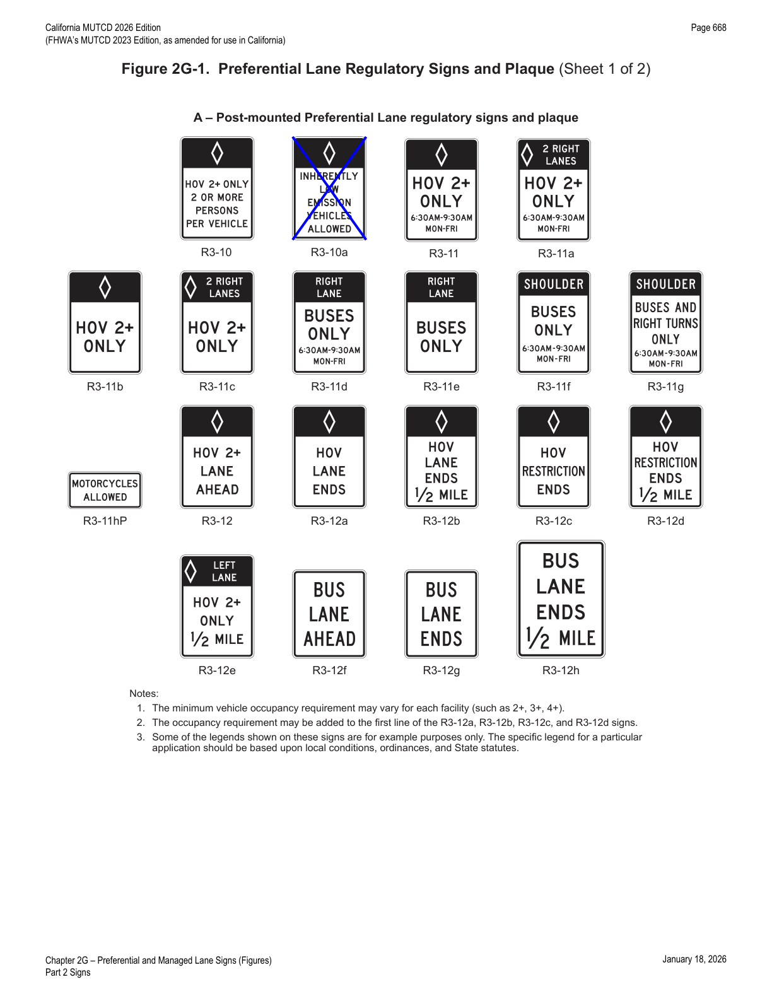
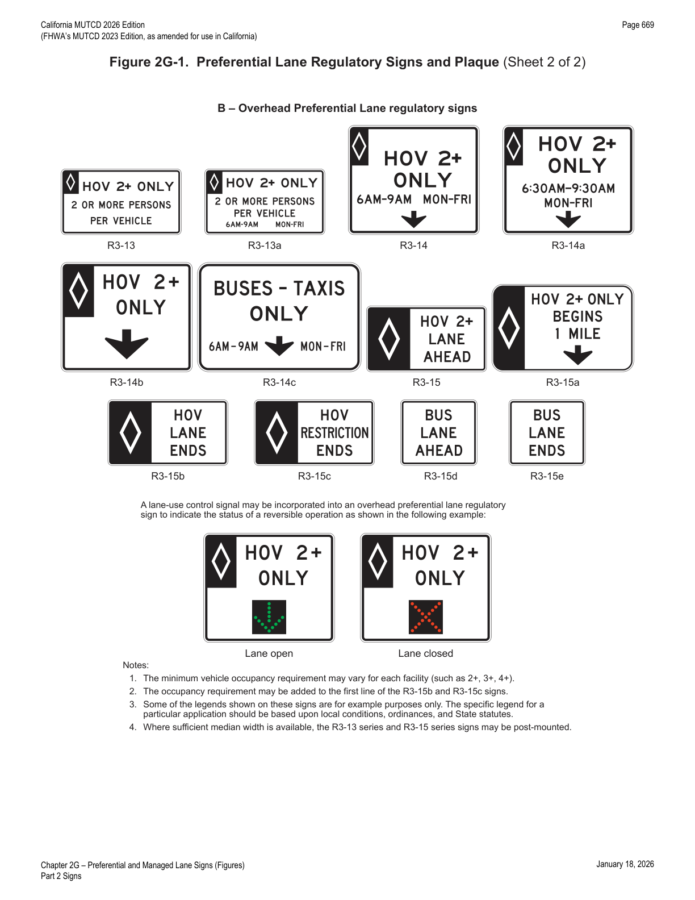
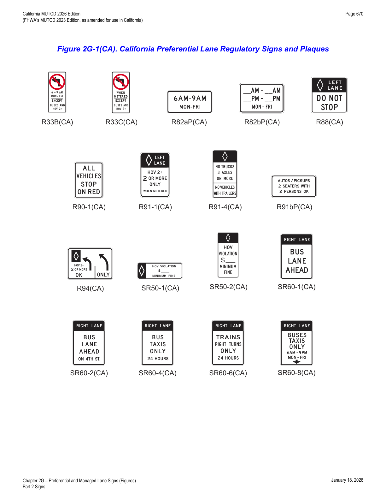
In practice: the diamond symbol is the load-bearing visual cue across this whole chapter — it appears on regulatory, warning, and guide signs alike whenever a vehicle-occupancy requirement applies, and its absence on an otherwise similar sign format signals a non-HOV preferential lane (bus/taxi).
2G.04Vehicle Occupancy Definition Signs (R3-10 Series and R3-13 Series)
- 01The R3-10, R3-13, and R3-13a Vehicle Occupancy Definition signs shall be used where agencies determine it is appropriate to define the minimum occupancy of vehicles allowed to use an HOV lane.
- 02The Inherently Low Emission Vehicle (ILEV) (R3-10a) sign should be used when a properly labeled and certified ILEV, regardless of occupant count, is permitted to use an HOV lane. When used, ILEV signs should be post-mounted in advance of and at intervals along the HOV lane based on engineering judgment and placement of other Preferential Lane regulatory signs. The R3-10a sign applies only to HOV lanes and should not be used with other preferential lane applications.
- 02aRefer to FHWA's List of Known Errors for an error in Paragraph 2 text. Refer to Section 1A.04 for more details.
- 03ILEVs are defined by EPA as vehicles having no fuel vapor (hydrocarbon) emissions, certified by EPA as meeting the standards in 40 CFR §88.311-93 and 40 CFR §88.312-93(c).
- 03aThe AUTOS/PICKUPS 2 SEATERS WITH 2 PERSONS OK (R91bP(CA)) plaque may be installed below the R3-10 sign for preferential lane facilities at toll plazas that require three or more persons per vehicle but can also be used by vehicles designed by the manufacturer for no more than two occupants. Refer to Streets & Highways Code § 30101.8.
- 04Section 2G.18 contains information regarding legends of Vehicle Occupancy Definition signs for a priced managed lane with an occupancy requirement for non-toll travel.
- 05For barrier-separated, buffer-separated, or contiguous preferential lanes where access is restricted to designated locations on freeways/expressways, an overhead Vehicle Occupancy Definition (R3-13 or R3-13a) sign shall be installed at least ½ mile in advance of the beginning of or initial entry point to an HOV lane. These signs shall only be displayed in advance of the beginning of, or initial or intermediate entry point to, HOV lanes.
- 05aThe R3-13 or R3-13a sign should be installed at least ¼ mile in advance of any intermediate access points or gaps in the barrier where vehicles are legally permitted to enter the access-restricted preferential lane.
- 06For buffer-separated or contiguous HOV lanes where access is restricted to designated locations on freeways/expressways, the sequence of a post-mounted Preferential Lane Operation (R3-11a) sign followed by a post-mounted Vehicle Occupancy Definition (R3-10) sign shall be located at intervals not greater than ½ mile along the length of designated gaps where vehicles may legally access the HOV lane, and within designated enforcement areas defined by the operating agency.
- 07For buffer-separated or contiguous HOV lanes where access is restricted to designated locations, the R3-11a + R3-10 sequence may be located at intervals of approximately ½ mile along the length of the HOV lane.
- 08For barrier-separated HOV lanes, the R3-11a + R3-10 sequence may be located at intervals of approximately ½ mile along the HOV lane, at intermediate entry points, and at designated enforcement areas.
- 08aRefer to Figure 2G-1 for other post-mounted Preferential Lane Operation signs used in lieu of the R3-11a sign.
- 09For buffer-separated or contiguous HOV lanes with continuous access to adjacent general-purpose lanes on freeways/expressways, the sequence of a post-mounted R3-11a sign followed by R3-10 and, if appropriate, R3-10a (ILEV) signs shall be located at intervals not greater than ½ mile along the HOV lane.
- 10On freeways and expressways, signs within each Preferential Lane regulatory sign sequence should be separated by a minimum of 800 feet and a maximum of 1,000 feet.
- 11On conventional roads, the distance between signs within each sequence should be determined by engineering judgment based on speed, block length, distances from adjacent intersections, and other site-specific factors.
- 11aBuffer-separated preferential lanes with continuous access to adjacent general-purpose lanes are not used on State Highways in California.
- 11bRefer to Figure 2G-1 for other post-mounted Preferential Lane Operation signs used in lieu of the R3-11a sign.
- 12For all types of direct access ramps that provide access to or lead to HOV lanes, an overhead Vehicle Occupancy Definition (R3-13a) sign, and an ILEV (R3-10a) sign if appropriate, shall be used at the beginning or initial entry point for the direct access ramp (see Figure 2G-16(CA)).
- 13The (HOV) NO TRUCKS 3 AXLES OR MORE – NO VEHICLES WITH TRAILERS (R91-4(CA)) sign may be placed adjacent to the HOV lane, as needed, where trucks or vehicles with trailers are frequently observed using the HOV lanes, and on surface streets approaching direct access ramps that lead to HOV lanes.
2G.05Preferential Lane Operation Signs (R3-11 Series and R3-14 Series)
- 01Standardized sizes of post-mounted Preferential Lane Operation (R3-11 series) signs are consistent to accommodate future addition/removal of a single line of legend, with each size accommodating two lines for times/days in effect — beneficial for ordering sign materials and making future legend changes.
- 02Where the regulation is in effect during more than one daily time period (e.g., morning and afternoon peaks), the height of the R3-11 and R3-14 series signs should be suitably increased to accommodate the additional line(s).
- 03When used, post-mounted Preferential Lane Operation (R3-11 series, SR60-4(CA), and SR60-6(CA)) signs shall be located adjacent to the preferential lane; overhead Preferential Lane Operation (R3-14 series and SR60-8(CA)) signs shall be mounted directly over the lane.
- 04Post-mounted (R3-11 series, SR60-4(CA), SR60-6(CA)) legend sequence: Top lines — lanes applicable ("RIGHT LANE" or "2 RIGHT LANES"); Middle lines — eligible uses ("HOV 2+ ONLY", "BUSES ONLY", "BUSES-TAXIS ONLY", "TRAINS ONLY", or other uses/turning movements); Bottom lines — applicable times/days ("7 AM – 9 AM", "6:30 AM – 9:30 AM, MON-FRI", or "24 HOURS").
- 05Overhead (R3-14 series and SR60-8(CA)) legend sequence: Top lines — eligible uses; Bottom lines — applicable times/days with the time/day placed above the down arrow. When operating periods exceed the available line width, hours and days shall be stacked as shown for the R3-14a sign in Figure 2G-1.
- 06For full-time (24 hours/day, 7 days/week) restrictions, the Preferential Lane Operation (R3-11b, R3-11c, R3-11e, R3-11g, R3-14b, R3-14e, R3-14g, SR60-4(CA), and SR60-6(CA)) signs that include a period-of-operation legend shall be modified to display no legend relative to the period of operation, except as provided in Paragraph 7.
- 06aRefer to FHWA's List of Known Errors for errors in Paragraph 6 text. Refer to Section 1A.04 for more details.
- 07In lieu of removing the period-of-operation text for full-time operation, the legend 24 HOURS may be substituted for times/days on the R3-11, R3-11a, R3-11d, R3-11f, R3-11g, R3-14, R3-14a, R3-14c, R3-14d, R3-14f, and SR60-8(CA) signs.
- 07aRefer to FHWA's List of Known Errors for errors in Paragraph 7 text. Refer to Section 1A.04 for more details.
- 08The 24 HOURS legend on Preferential Lane Operation (R3-11 and R3-14 series) signs reinforces full-time operation where nearby facilities have differing hours (some part-time, some full-time), or where the same lane changes from part-time to full-time operation along its length.
- 08aRefer to FHWA's List of Known Errors for an error in Paragraph 8 text. Refer to Section 1A.04 for more details.
- 09Full-time Preferential Lane Operation (R3-11b, R3-11c, R3-11e, R3-11g, R3-14b, R3-14e, R3-14g) signs that omit the period-of-operation legend shall not be used where the restriction is in effect only part-time.
- 09aRefer to FHWA's List of Known Errors for errors in Paragraph 9 text. Refer to Section 1A.04 for more details.
- 10Where additional movements are allowed from a preferential lane on the approach to an intersection by vehicles not meeting the regulation, the legend format on the middle lines of R3-11 series signs and top line of R3-14 series signs may be modified to accommodate the allowable movement (e.g., "HOV 2+ AND RIGHT TURNS ONLY").
- 10aThe Mandatory/Optional HOV Movement Lane Control (R94(CA)) sign may be installed on local streets when one of the mandatory turn lanes (left or right) is designated HOV-only.
- 11The MOTORCYCLES ALLOWED (R3-11hP) plaque may be used where motorcycles, regardless of occupant count, are allowed to use an HOV lane.
- 12If used, the MOTORCYCLES ALLOWED plaque shall be mounted below a post-mounted Preferential Lane Operation (R3-11, R3-11a, or R3-11b) sign.
- 13For all barrier-separated, buffer-separated, or contiguous preferential lanes where access is restricted to designated locations, an overhead Preferential Lane Operation (R3-14 series or SR60-8(CA)) sign shall be used at the beginning/initial entry point on freeways and expressways, and at locations on conventional roadways where the preferential lane is not the outermost lane, and at any intermediate entry points or gaps. Post-mounted (R3-11 series, SR60-4(CA), SR60-6(CA)) signs shall be used only as a supplement to the overhead signs at those locations.
- 14For buffer-separated or contiguous preferential lanes with continuous access to adjacent general-purpose lanes (Figures 2G-2 and 2G-3), an overhead Preferential Lane Operation (R3-14 series) sign shall be used at the beginning or initial entry point of the preferential lane on freeways and expressways.
- 15On conventional roads, R3-11 series post-mounted signs may be used in lieu of or in addition to overhead R3-14 series signs, except where overhead signs are required per Paragraph 13.
- 15aRefer to FHWA's List of Known Errors for an error in Paragraph 15 text. Refer to Section 1A.04 for more details.
- 16Additional overhead (R3-14 series and SR60-8(CA)) or post-mounted (R3-11 series) Preferential Lane Operation signs may be provided along the length of any type of preferential lane.
- 16aBuffer-separated preferential lanes with continuous access to adjacent general-purpose lanes are not used on State Highways in California.
- 17For all direct access ramps that provide access to or lead to preferential lanes, a post-mounted Preferential Lane Operation (R3-11 series) sign shall be used at the beginning or initial entry point of the direct access ramp.
- 18For direct access ramps to preferential lanes, an overhead Preferential Lane Operation (R3-14 series) sign may be used at the beginning or initial entry point to supplement the required post-mounted signs.
- 19Lane-use control signals (see Chapter 4T) may be used at access points to preferential lanes to indicate that a ramp/access roadway, or one or more specific lanes, are open or closed (see Figure 2G-1).
2G.06Preferential Lane Advance Signs (R3-12, R3-12e, R3-12f, R3-15, R3-15a, and R3-15d)
- 01The Preferential Lane Advance (R3-12, R3-12f, R3-15, and R3-15d, SR60-1(CA), and SR60-2(CA)) signs (see Figure 2G-1 and Figure 2G-1(CA)) shall be used for advance notification of a barrier-separated, buffer-separated, or contiguous preferential lane that is added to the general-purpose lanes (see Figure 2G-2).
- 02The Preferential Lane Advance (R3-12e and R3-15a) signs shall be used for advance notification of a general-purpose lane that becomes a preferential lane (see Figure 2G-3).
- 03The legends on the R3-12f and R3-15d signs may be modified to suit the type of preferential lane.
- 04On conventional roads, for general-purpose lanes that become preferential lanes, a post-mounted (R3-12e) or overhead (R3-15a) Preferential Lane Advance sign should be installed in advance of the beginning of or initial entry point to the preferential lane, at a distance determined by engineering judgment based on speed, traffic characteristics, and site-specific considerations, providing adequate opportunity for ineligible vehicles to vacate the lane.
- 05On freeways and expressways, for general-purpose lanes that become preferential lanes, an overhead R3-15a sign should be installed at least 1 mile in advance of the beginning of the preferential lane restriction.
- 06Additional post-mounted or overhead Preferential Lane Advance signs may be placed farther in advance of or closer to the beginning or initial entry points.
- 07A Specific Hours/Days (R82aP(CA) or R82bP(CA)) plaque shall be used to designate the periods of operation for preferential lanes that operate on a part-time basis.
- 08When used, the Specific Hours/Days plaque should be placed below the R3-12, R3-12e, R3-12f, SR60-1(CA), and SR60-2(CA) signs.
2G.07Preferential Lane Ends Signs (R3-12a, R3-12b, R3-12c, R3-12d, R3-12g, R3-12h, R3-15b, R3-15c, and R3-15e)
- 01A post-mounted Preferential Lane Ends (R3-12b or R3-12h) sign shall be installed at least ½ mile in advance of the termination of a preferential lane on freeways and expressways.
- 02Except as provided in Paragraph 7, a post-mounted Preferential Lane Ends (R3-12a or R3-12g) sign shall be installed at the point where a preferential lane and restriction end and traffic must merge into general-purpose lanes.
- 03A post-mounted Preferential Lane Ends (R3-12d) sign shall be installed at least ½ mile in advance of the point where a preferential lane restriction ends and the lane becomes a general-purpose lane on freeways and expressways.
- 04Except as provided in Paragraph 8, a post-mounted Preferential Lane Ends (R3-12c) sign shall be installed at the point where a preferential lane restriction ends and the lane becomes a general-purpose lane.
- 05On conventional roads, the advance distance for Preferential Lane Ends signs should be determined by engineering judgment.
- 06The legends on the R3-12g and R3-15e signs may be modified to suit the type of preferential lane.
- 07An overhead Preferential Lane Ends (R3-15b or R3-15e) sign may be installed instead of or in addition to a post-mounted R3-12a or R3-12g sign where the lane and restriction end and traffic must merge into general-purpose lanes.
- 08An overhead Preferential Lane Ends (R3-15c) sign may be installed instead of or in addition to a post-mounted R3-12c sign where the restriction ends and the lane becomes a general-purpose lane.
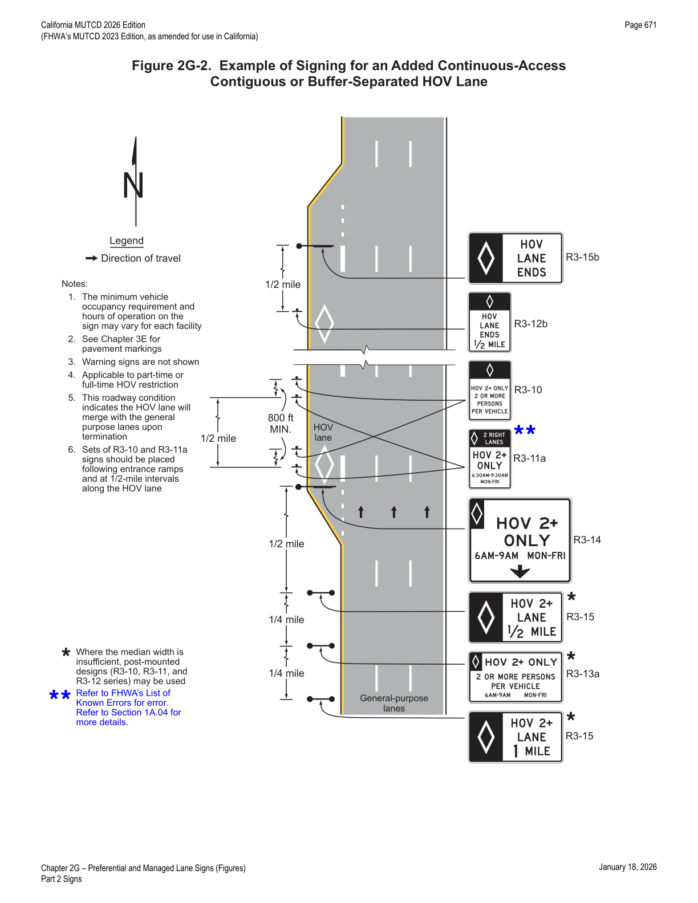
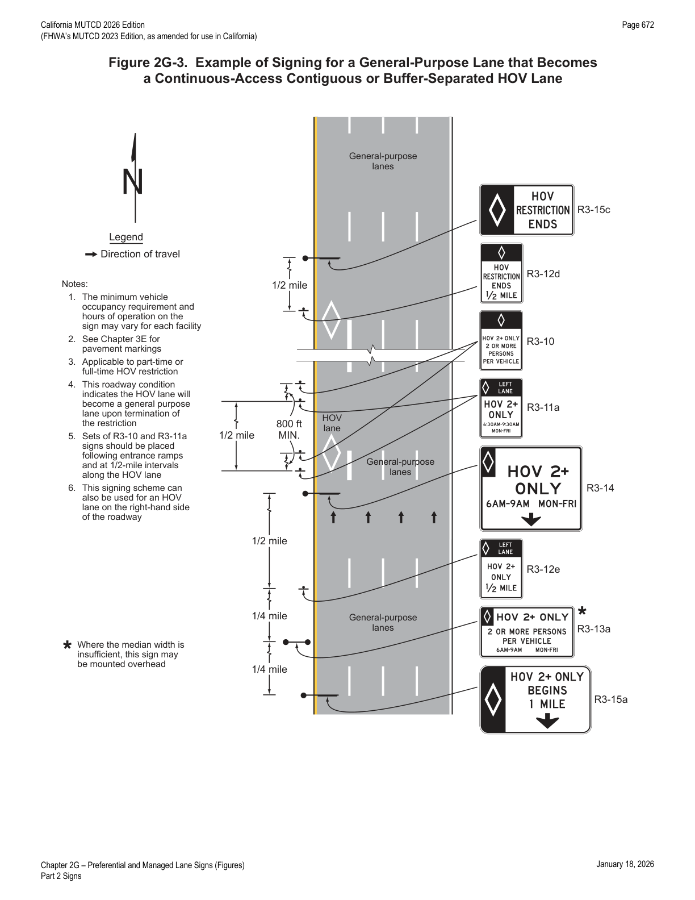
2G.08Warning Signs on Median Barriers for Preferential Lanes
- 01When a warning sign applicable only to a preferential lane is installed on a median barrier with limited lateral clearance, the sign may have a vertically-oriented rectangular shape. For an HOV lane, such signs may be used instead of the HOV (W16-11P) plaque (Section 2G.09) with a standard diamond-shaped warning sign.
- 02When a vertically-oriented rectangular warning sign for a preferential lane is installed on a median barrier, the top portion shall be a white symbol or legend denoting the preferential lane type (diamond symbol for HOV, or legend BUS LANE) on a black background with a white border; the bottom portion shall be the standard word message/symbol of the standard warning sign as black legend on yellow background with black border (see Figure 2G-4).
- 03Where lateral clearance is limited for a post-mounted warning sign on a median barrier, the edges should not project beyond the outer edges of the barrier.
- 04Where lateral clearance is limited, preferential-lane warning signs post-mounted on a median barrier that are 72 inches or less in width may be skewed up to 45 degrees to fit within the barrier width, or mounted higher such that the vertical clearance to the bottom of the sign, light fixture, or its structural support (whichever is lowest) is not less than 17 feet above pavement/shoulders. For mounting heights on State highways, refer to Section 2A.15.
- 05Where lateral clearance is limited, Preferential Lane warning signs post-mounted on a median barrier and wider than 72 inches shall be mounted with vertical clearance complying with Section 2A.15 for overhead mounting.
- 06The HOV Lane Reduction (W11-1(CA)) sign should be used to warn motorists of a reduction in the number of HOV lanes.
- 07The HOV Merge (W59-1(CA)) sign should be used in advance of locations where HOV lanes converge, including HOV direct access ramps where high speeds/volumes prevail and merging/weaving must occur in a relatively short distance.
- 08When used, the HOV Advisory Exit (Ramp) Speed (W72B(CA)) sign should be placed on the left of an HOV drop ramp or freeway-to-freeway connector to advise of the comfortable negotiating speed.
- 09The HOV THRU TRAFFIC MERGE LEFT (RIGHT) (W74-1(CA)) sign should be used to inform motorists that the inside or outside lane of an HOV facility with two or more directional HOV lanes is being dropped at the next exit and through HOV traffic must merge into the adjacent HOV lane; it should not be used to indicate a general lane reduction.
2G.09High-Occupancy Vehicle (HOV) Plaque (W16-11P)
- 01Where there is a need to warn drivers in an HOV lane of a specific condition, the HOV (W16-11P) plaque may be used above a warning sign, to differentiate a warning sign applicable to the HOV lanes when the sign is also visible to traffic on the adjacent general-purpose roadway. Possible applications include the Advisory Exit Speed, Added Lane, and Merge signs.
- 02The diamond symbol may be used instead of the word message HOV on the W16-11P plaque. When appropriate, the words LANE or ONLY may be used on this plaque.
- 03Section 2G.08 contains information regarding warning signs that can be mounted on barriers for HOV or other types of preferential lanes.
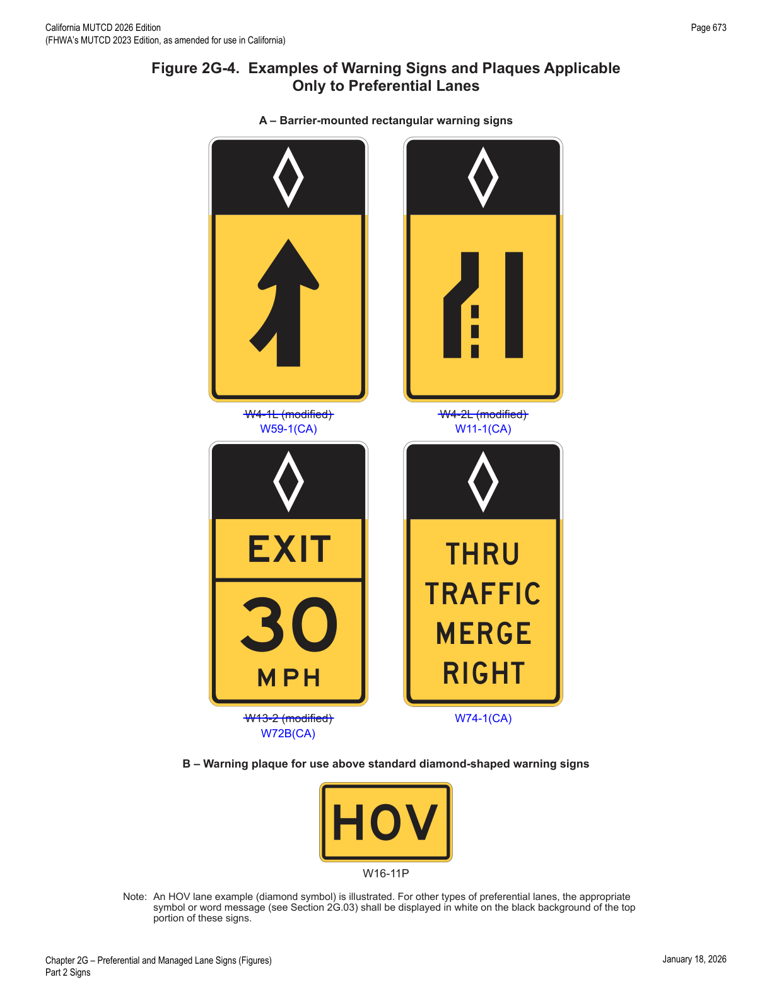
2G.10Preferential Lane Guide Signs — General
- 01Preferential lanes are used on freeways, expressways, and conventional roads. Except as otherwise provided, Sections 2G.10 through 2G.15 apply only to guide signs for preferential lanes on freeways and expressways.
- 02On conventional roads, guide signs applicable only to preferential lanes are ordinarily not needed, but if used, they should comply with Chapter 2D and any principles in Sections 2G.10 through 2G.15 that engineering judgment finds appropriate.
- 03Additional guidance and standards for designation, operational considerations, signs, pavement markings, and other considerations for preferential lanes are in Sections 2G.03 through 2G.07, 2G.09, and Chapter 3E.
- 04The appropriate combinations of pavement markings and standard overhead/post-mounted regulatory, warning, and guide signs for a specific preferential lane application should be selected based on an engineering study.
- 05If overhead signs for a preferential lane are located at approximately the same longitudinal position as overhead signs for general-purpose lanes, the preferential lane signs should be separated laterally to the maximum extent practicable to minimize conflicting information.
- 06Preferential Lane signs should be designed and located to avoid overloading the road user. Priority order for guide signs: Advance Guide, Preferential Lane Entrance Direction, then Preferential Lane Exit Destination Supplemental guide signs.
- 07Signs applicable only to a preferential lane shall be distinguished from signs applicable to general-purpose lanes by the inclusion of the applicable symbol(s) and/or word(s).
- 08The symbol and/or word message on a guide sign applicable only to a preferential lane will vary based on the specific type of traffic allowed and related operational constraints (HOV lane, bus lane, taxi lane).
- 09For HOV lanes, the diamond symbol shall appear on each Advance Guide (E8-3) sign (Figure 2G-5), Preferential Lane Entrance Direction (E8-2 or E8-2a) sign (Figure 2G-6), and Preferential Lane Entrance Gore (E8-1 or E8-1a) sign (Figure 2G-7) for designated entry/exit points for barrier-separated and buffer-separated geometric configurations and direct access ramps. The diamond symbol shall not be used with preferential lanes for other traffic types (bus or taxi lanes).
- 10Signing for an HOV lane managed by varying the occupancy requirement in response to changing conditions shall also comply with these provisions.
- 11The diamond symbol shall be displayed in the legend of each Preferential Lane guide sign at designated entry/exit points for all HOV lane types (barrier-separated, buffer-separated, contiguous, direct access ramps) to alert motorists of a minimum vehicle occupancy requirement. Guide signs shall not display the occupancy requirement or period of operation for the preferential lane (that belongs on regulatory signs).
- 12A combination of guide and regulatory signs shall be used in advance of and at the initial entry point and all intermediate entry points from general-purpose lanes/facilities to contiguous, barrier-separated, and buffer-separated preferential lanes where access is restricted to designated locations. The regulatory signs shall comply with Sections 2G.03 through 2G.07.
- 13Regulatory signs alone shall be used in advance of, at the beginning of, and at periodic intervals along contiguous or buffer-separated preferential lanes providing continuous access between adjacent general-purpose and preferential lanes (Figures 2G-2 and 2G-3). Design and placement shall comply with Sections 2G.03 through 2G.07.
- 14Except as otherwise provided in Sections 2G.10 through 2G.13, guide signs applicable to a preferential lane with a vehicle occupancy requirement shall be distinguished from those applicable to general-purpose lanes by displaying the white diamond symbol on a black background at the left-hand edge of the signs.
- 15When post-mounted guide signs for a preferential lane are installed on a median barrier with limited lateral clearance, the guide signs may have a vertically-oriented rectangular shape.
- 15aBuffer-separated preferential lanes with continuous access to adjacent general-purpose lanes are not used on State Highways in California.
- 16When vertically-oriented rectangular-shaped guide signs for a preferential lane are installed on a median barrier, the top portion shall comprise the applicable white symbol/word message identifying the preferential lane type (e.g., diamond symbol for HOV) on a black background with white border; the bottom portion shall comprise the appropriate guide sign legend on a green background with white border (see Figures 2G-7 through 2G-9).
- 17Where lateral clearance is limited for a post-mounted Preferential Lane guide sign on a median barrier, the edges should not project beyond the outer edges of the barrier.
- 18Where lateral clearance is limited, Preferential Lane guide signs 72 inches or less in width may be skewed up to 45 degrees to fit within the barrier width, or mounted higher such that vertical clearance to the bottom of the sign, light fixture, or its structural support (whichever is lowest) is not less than 17 feet above pavement/shoulders. For mounting heights on State highways, refer to Section 2A.15.
- 19Where lateral clearance is limited, Preferential Lane guide signs post-mounted on a median barrier and wider than 72 inches shall be mounted with vertical clearance complying with Section 2A.15 for overhead mounting.
- 20Lane-use control signals (see Chapter 4T) may be used at access points to preferential lanes to indicate that a ramp/access roadway leading to or from the preferential lane or facility, or specific lanes, are open or closed.
- 21Changeable message signs may supplement, substitute for, or be incorporated into static guide signs (see Figure 2G-6) where travel conditions change or multiple operational strategies (variable occupancy requirements, vehicle types, or pricing policies) are used and varied throughout the day/week.
- 22When changeable message signs (see Chapter 2L) are used as guide signs for preferential lanes, they shall be the required sign size and display the required letter height and legend format corresponding to the roadway facility type and design speed.
- 23Advance Guide signs, Preferential Lane Entrance Direction signs, and Preferential Lane Entrance Gore signs for initial and intermediate entry points into a preferential lane from the general-purpose lanes on the same designated route shall not identify the entry point as an exit using the word "EXIT" on the sign or a plaque.
- 24Advance Guide and Preferential Lane Entrance Direction signs for initial/intermediate entry points should use the word "ENTRANCE," such as "HOV LANE ENTRANCE" (Figures 2G-5 and 2G-6), to convey that vehicles are not leaving the designated route.
- 25Preferential Lane Entrance Gore signs (Figure 2G-7) at the initial entry point should use the word "ENTRANCE." Entrance Gore signs at intermediate entry points to a barrier-separated preferential lane, located immediately adjacent to and directly viewed by traffic already in the preferential lane, should not use the word "ENTRANCE."
- 26When the entry point is on the left-hand side of the general-purpose lanes, a LEFT (E1-5aP) plaque (see Figure 2E-9) shall be added to the top left edge (above and abutting) of the Advance Guide and Preferential Lane Entrance Direction signs. The LEFT plaque shall not be used on a preferential lane regulatory sign.
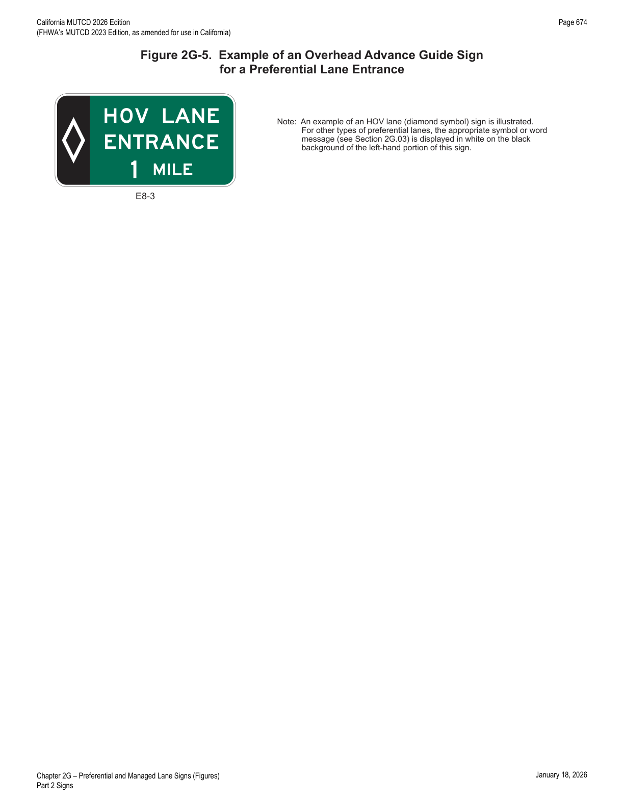
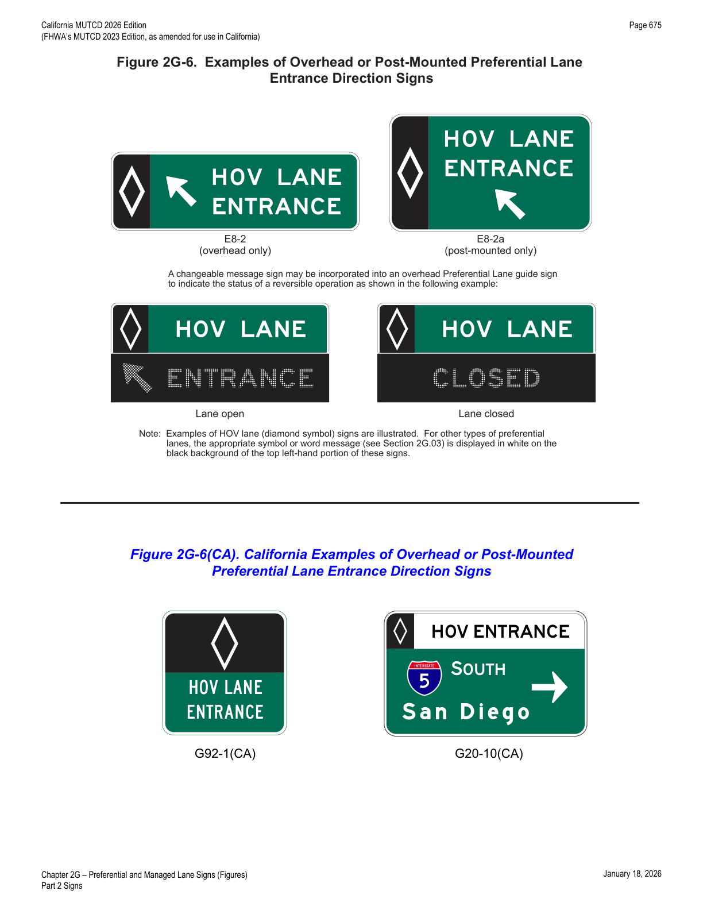
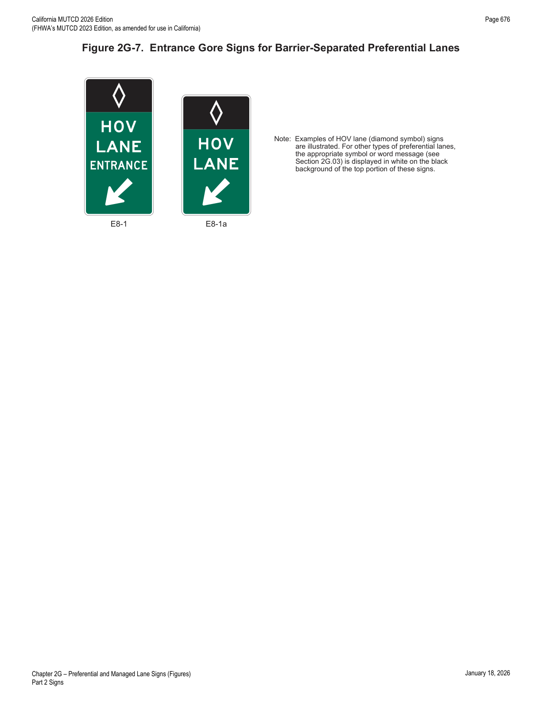
2G.11Signing for Initial Entry Points to Preferential Lanes
- 01Except where a buffer-separated or contiguous preferential lane is added, or a general-purpose lane becomes such a lane, and provides continuous access with adjacent general-purpose lanes (Figures 2G-2 and 2G-3), an Advance Guide sign shall be provided at least ½ mile prior to the initial entry point to all types of preferential lanes in any geometric configuration on freeways and expressways. A Preferential Lane Entrance Direction sign shall also be provided at the initial entry point. Neither sign shall include the word "EXIT" (see Section 2G.10).
- 02Where a general-purpose lane becomes a preferential lane that does not provide continuous access with adjacent general-purpose lanes, an Advance Guide sign shall also be provided at approximately 1 mile in advance of the initial entry point. The Advance Guide and Entrance Direction signs in this sequence shall include a panel at the bottom with black legend/border on yellow background displaying a down arrow and the word ONLY, as illustrated in Figure 2G-8.
- 03Unless an Advance Guide sign is already required by Paragraph 2, an Advance Guide sign should also be installed at approximately 1 mile in advance of the initial entry point to a preferential lane on freeways/expressways that restricts access to the adjacent general-purpose lanes.
- 04An Advance Guide sign may also be installed at approximately 2 miles in advance of the initial entry point to a preferential lane that restricts access with adjacent general-purpose lanes to designated locations.
- 04aBuffer-separated preferential lanes with continuous access to adjacent general-purpose lanes are not used on State Highways in California.
- 05For barrier-separated, buffer-separated, or contiguous preferential lanes where entry is restricted to only designated points on freeways/expressways, the Advance Guide and Preferential Lane Entrance Direction signs shall be mounted overhead.
- 06Preferential Lane Exit Destination guide signs, identifying final destination and downstream exit locations accessible from the preferential lane (Figures 2G-8, 2G-9, 2G-14, 2G-16, and 2G-17), should be installed in advance of the initial entry points to access-restricted preferential lanes (barrier-separated and buffer-separated).
- 06aThese signs should be located based on the priority of the message, available space, existing signs on adjacent general-purpose lanes, roadway/traffic characteristics, proximity to existing overhead signs, ability to install overhead signs, and other unique local factors.
- 07Advance destination guide signs for preferential lanes shall include an upper section displaying a black legend with the type of preferential lane and the word "EXITS," such as "HOV EXITS," on a white background. For preferential lanes with a vehicle occupancy requirement, the white diamond symbol on black background shall be displayed at the left-hand edge of this upper section (see Figure 2G-9). These signs shall list only direct exits from the preferential lane to a street, another highway, or a destination such as a park-and-ride facility.
- 08Figure 2G-8 shows an example of signing for a general-purpose lane that becomes a preferential lane without continuous access to adjacent general-purpose lanes.
- 09Figure 2G-9 shows an example of signs for the initial entry point to a preferential lane.
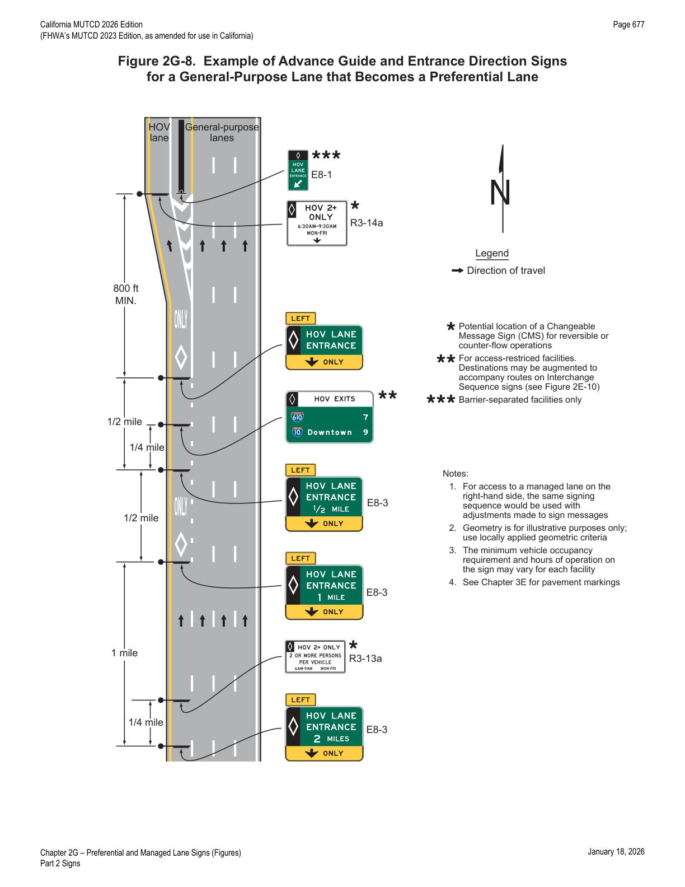
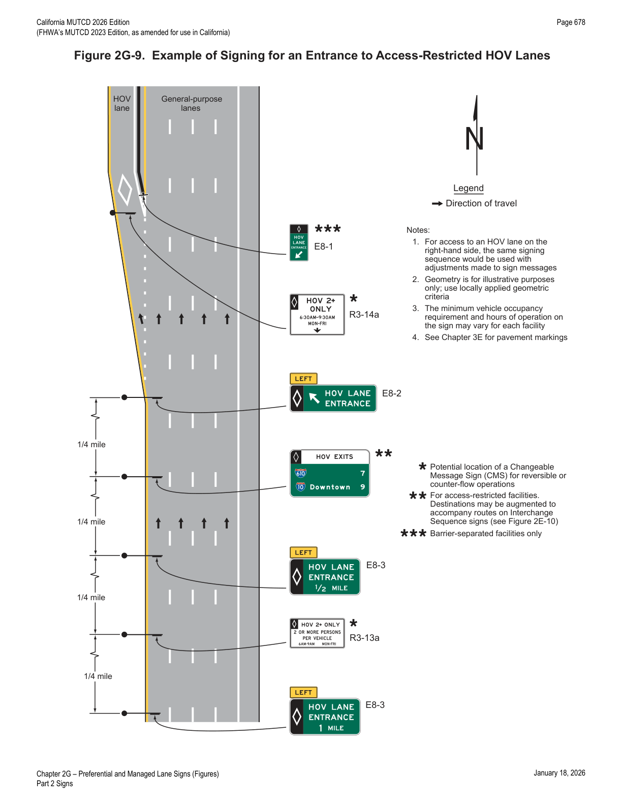
2G.12Signing for Intermediate Entry Points to Preferential Lanes
- 01For barrier-separated, buffer-separated, and contiguous preferential lanes where entry is restricted only to designated points, an overhead Preferential Lane Entrance Direction sign shall be provided at intermediate entry points to the preferential lane from the general-purpose lanes.
- 02For barrier-separated and buffer-separated preferential lanes where intermediate entry is provided via a separate lane or ramp (Figure 2G-10), at least one Advance Guide sign should be provided in addition to the Preferential Lane Entrance Direction sign.
- 03For access-restricted preferential lanes where intermediate entrance and egress are at the same designated access location, the Preferential Lane Entrance Direction sign should be located between ½ and ¼ of the length of the designated entry area, measured from the downstream end of the entry area (Figure 2G-11).
- 04The Advance Guide signs, if used for intermediate entry points, shall be overhead.
- 05Advance Guide signs may be provided at approximately ½ mile, 1 mile, and 2 miles in advance of intermediate entry points from the general-purpose lanes to a preferential lane.
- 06Advance Guide and Preferential Lane Entrance Direction signs for intermediate entry points shall not include the word "EXIT" (see Section 2G.10).
- 07Exit Destination guide signs, identifying the final destination and downstream exit locations accessible from the preferential lane, should be installed in advance of intermediate entry points from the general-purpose lanes to access-restricted preferential lanes.
- 08Section 2G.11 contains information on the design and placement of Preferential Lane Exit Destination guide signs.
- 09Figures 2G-10 and 2G-11 show examples of signs for various geometric configurations of intermediate entry to a barrier-separated or buffer-separated preferential lane where access is restricted to designated locations.
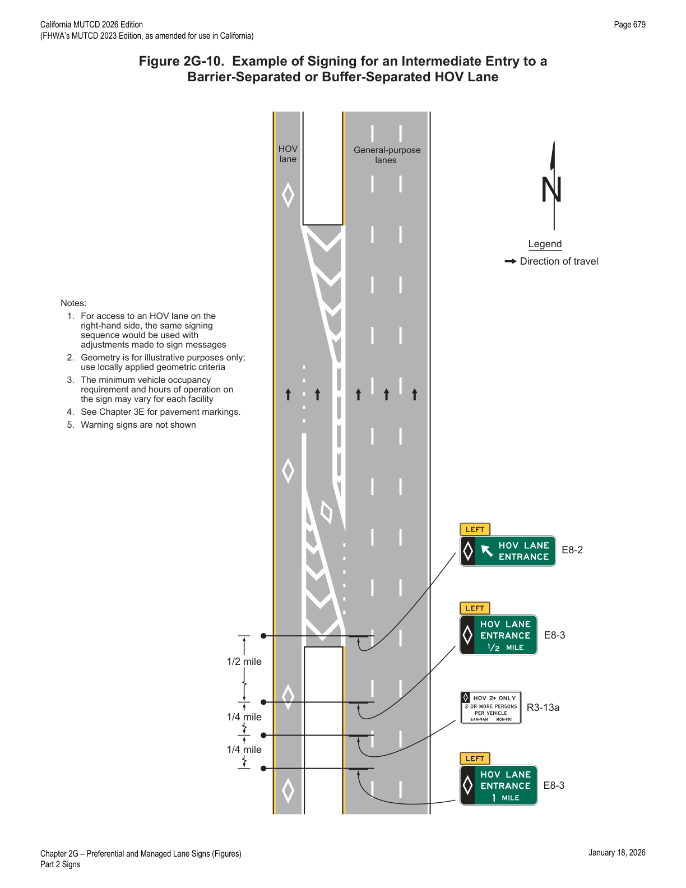
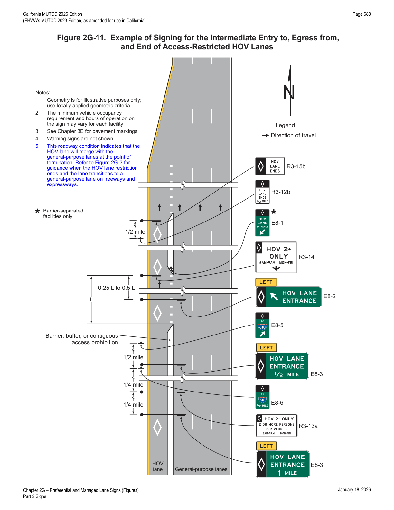
2G.13Signing for Egress from Preferential Lanes to General-Purpose Lanes
- 01Except as provided in Paragraphs 4 and 5, for barrier-separated, buffer-separated, and contiguous preferential lanes where egress is restricted only to designated points, post-mounted Advance Guide (E8-6) and post-mounted Intermediate Egress Direction (E8-5) signs (Figure 2G-12) shall be installed in the median or on median barriers that separate two directions of traffic, prior to and at the intermediate exit points from the preferential lanes to the general-purpose lanes (Figure 2G-11).
- 02The legends of these signs shall refer to the next exit or exits from the general-purpose lanes by displaying the appropriate destination information, exit number(s), or both. The Intermediate Egress Direction signs shall not refer to the egress as an exit.
- 03Section 2G.10 contains information on the design of post-mounted guide signs for a preferential lane when installed on a median barrier. Figures 2G-11 and 2G-13 show examples of signs for various geometric configurations of intermediate egress from a barrier-separated or buffer-separated preferential lane.
- 04Where two or more adjacent preferential lanes are present in a single direction, consideration should be given to using overhead guide signs to display egress information.
- 05For barrier-separated and buffer-separated preferential lanes where egress to the general-purpose lanes is restricted only to designated points via a separate lane or ramp, the Advance Guide and Intermediate Egress Direction signs should be mounted overhead, and a Pull-Through sign should be mounted with the Intermediate Egress Direction sign (Figure 2G-13).
- 06For preferential lanes with a vehicle occupancy requirement, the design of the overhead Advance Guide and Egress Direction signs for intermediate egress shall display a white diamond symbol on a black background at the left-hand edge of the signs.
- 07The design of Pull-Through signs used with an Egress Direction sign at an intermediate egress shall be distinguished from those applicable to general-purpose lanes by an upper section with the applicable black legend on white background, such as HOV LANE. For preferential lanes with a vehicle occupancy requirement, the white diamond symbol on black background shall be displayed at the left-hand edge of this upper section.
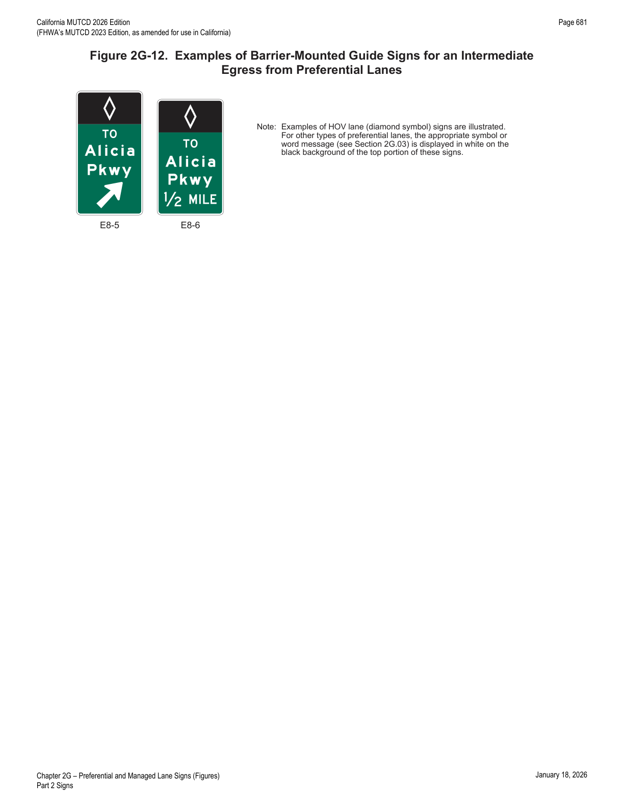
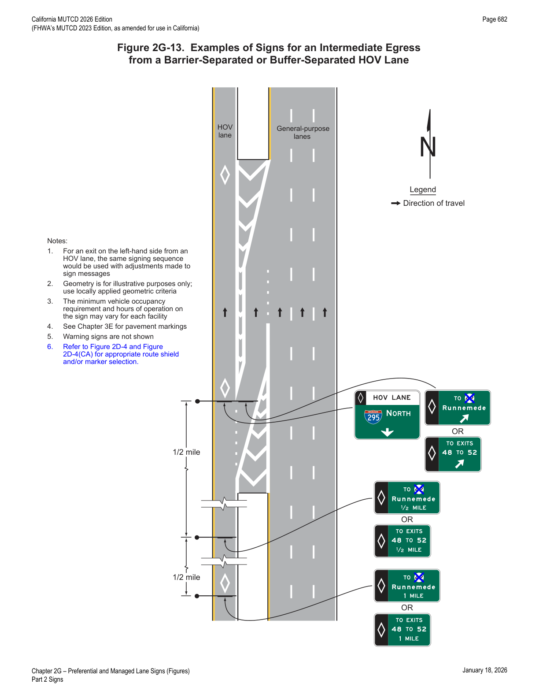
2G.14Signing for Direct Entrances to Preferential Lanes from Another Highway
- 01For direct access ramps to preferential lanes from a transit facility (such as a park-and-ride lot or a transit station/terminal) accessible from surface streets, advance guide signs shall be provided along the adjoining surface streets to direct traffic into and through the transit facility to the preferential lane (see Figure 2G-14).
- 01aThe HOV Direct Entrance Guide (G20-10(CA)) sign (see Figures 2G-6(CA) and 2G-16(CA)) shall be used on a multilane cross street in advance of a direct-access ramp to an HOV lane.
- 01bThe HOV LANE ENTRANCE (G92-1(CA)) sign (see Figures 2G-6(CA) and 2G-16(CA)) shall be used at the entrance of a direct access ramp from a park-and-ride lot or transit station/terminal leading to an HOV lane. The G92-1(CA) sign is similar in design and application to the FREEWAY ENTRANCE (D13-3) sign and shall be used in the same manner. Refer to Sections 2A.15 and 2B.48 for additional details.
- 02Figure 2G-14 provides examples of recommended uses and layouts of signs for HOV lanes for direct access ramps, park-and-ride lots, and access from surface streets.
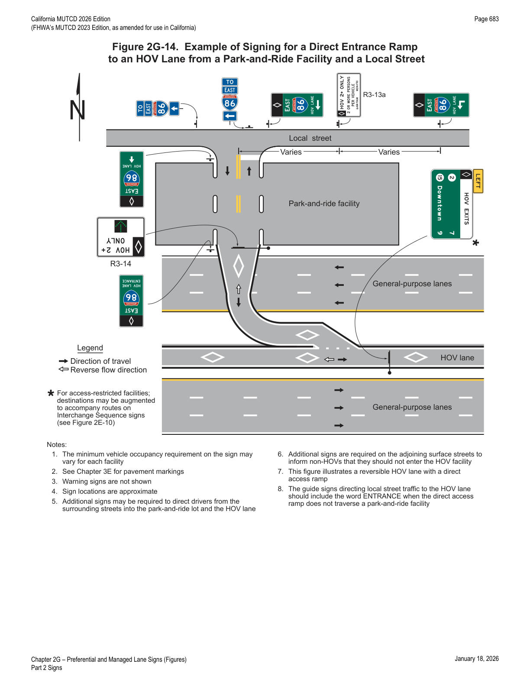
2G.15Signing for Direct Exits from Preferential Lanes to Another Highway
- 01For contiguous preferential lanes on the left-hand side of the roadway, Advance Guide signs, Exit Direction signs, and Exit Gore (E8-4) signs (Figure 2G-15 and Figure 2G-15(CA)) specifically applicable to the preferential lanes shall be used for exits to direct access ramps, such as HOV lane ramps (Figure 2G-16) or ramps to park-and-ride facilities.
- 02The design of Advance Guide, Exit Direction, and Pull-Through signs for direct exits from preferential lanes shall be distinguished from those applicable to general-purpose lanes by an upper section with the applicable black legend on white background, such as HOV LANE (Pull-Through) or HOV EXIT (Advance Guide and Exit Direction). For preferential lanes with a vehicle occupancy requirement, the white diamond symbol on black background shall be displayed at the left-hand edge of this upper section (see Figures 2G-16 and 2G-17).
- 02aThe HOV Exit with Arrow (E8-4) sign shall be used as an exit gore sign for direct-access ramp exits from an HOV lane.
- 02bThe arrow on the E8-4 sign should be oriented to match the approximate angle of departure and positioned to avoid confusion that the exit serves mainline traffic.
- 03Advance Guide and Exit Direction signs for exits to direct access ramps from a preferential lane should be mounted overhead. A Pull-Through sign over the preferential lane should be used with the Exit Direction sign at exits to direct access ramps.
- 03aThe HOV Advance Guide (G86-15(CA) and G83-6(CA)) and Exit Direction (G85-12(CA)) signs for exits to direct-access ramps from a preferential lane shall be mounted overhead.
- 04Post-mounted guide signs in a vertically-oriented rectangular shape installed on a median barrier shall not be used for the Advance Guide and Exit Direction signs for exits to direct access ramps.
- 05Because direct access ramps for preferential lanes at interchanges connecting two freeways are typically left-hand side exits and typically have design speeds similar to the preferential lane, overhead Advance Guide signs and overhead Exit Direction signs shall be provided in advance of and at the entry point to each freeway-to-freeway preferential lane ramp (see Figure 2G-17).
- 06The use of guide signs for preferential lanes at freeway interchanges should comply with the provisions for guide signs established in Chapter 2E.
- 07Guide signs for direct access ramps for preferential lanes at interchanges connecting two freeways are similar to those for a connecting ramp between two freeway facilities.
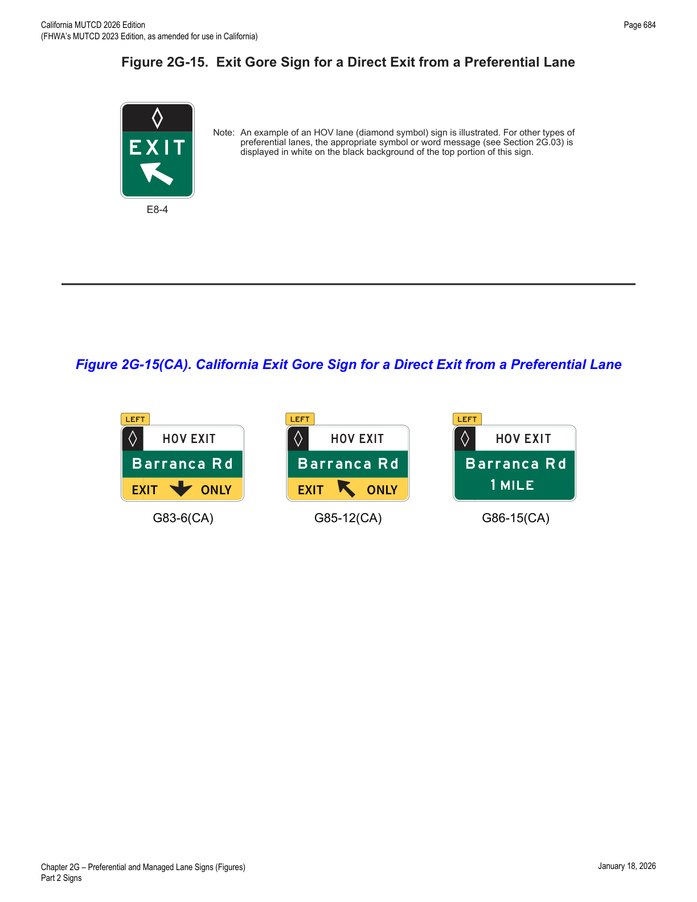
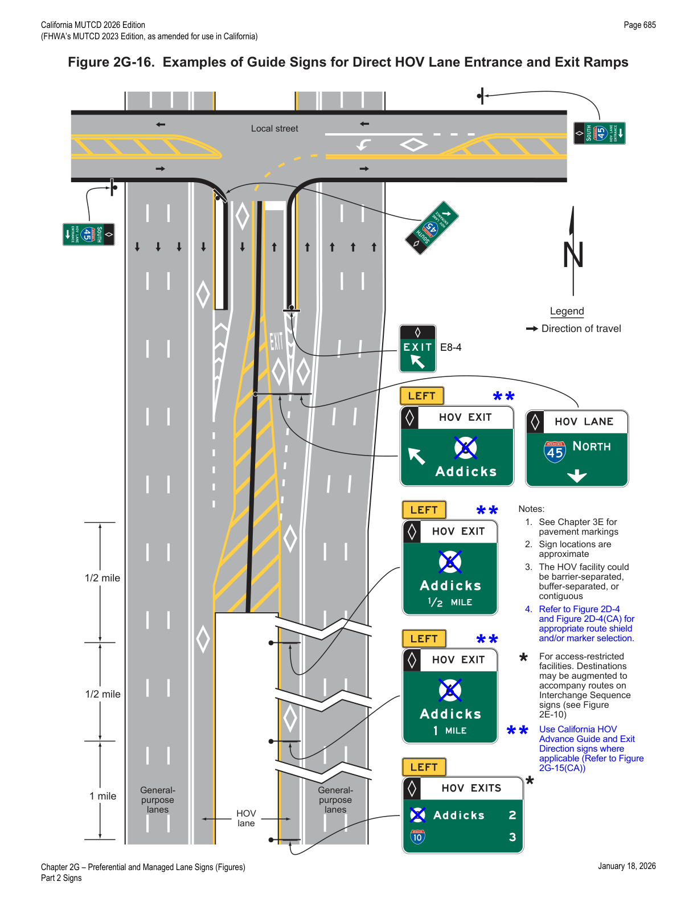
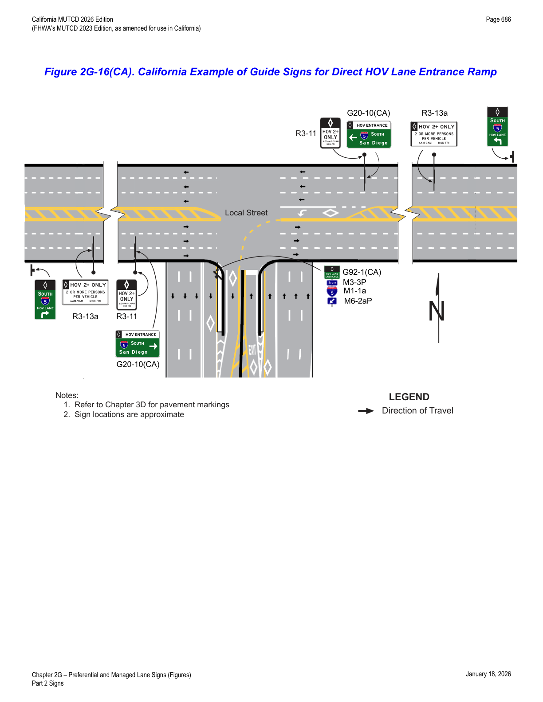
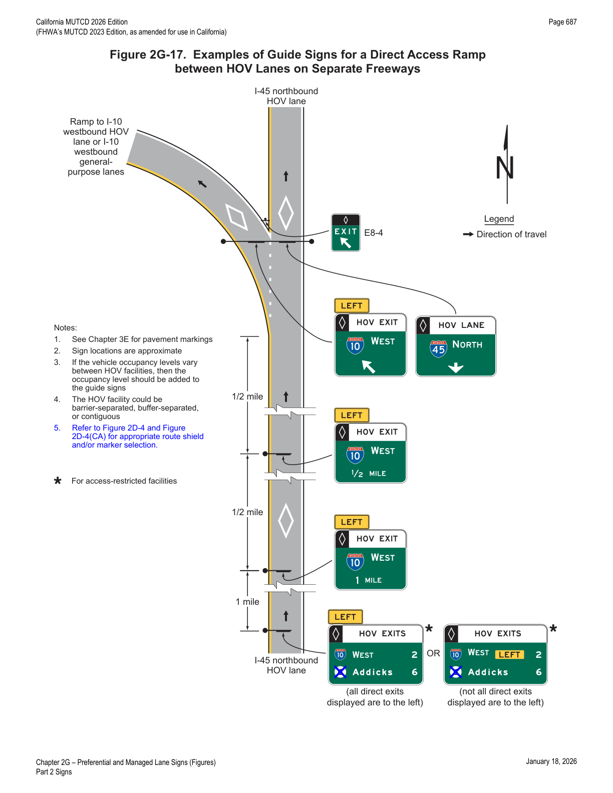
2G.16Signs for Managed Lanes — General
- 01The provisions of Sections 2G.03 through 2G.07 regarding regulatory signs for preferential lanes shall apply to managed lanes operated at all times or at certain times by varying vehicle occupancy requirements (HOV) or using vehicle type restrictions as a congestion management strategy. Such managed lanes shall use changeable message signs or changeable message elements within static signs to display the appropriate regulatory sign messages only when in effect.
- 02When certain vehicle types (such as trucks) are prohibited from using a managed lane, or a managed lane is restricted to certain vehicle types during certain operational strategies, regulatory signs or regulatory panels within the appropriate guide signs that include changeable message elements shall be used to display the open/closed status of the managed lane for such vehicle types.
- 03When the vehicle occupancy required for use of an HOV lane is varied as part of a managed lane operational strategy, regulatory signs that include changeable message elements shall be used to display the required minimum vehicle occupancy in effect.
- 04Section 2G.18 contains information about regulatory signs for managed lanes that use tolling or pricing as a congestion management strategy, either exclusively or with other management strategies.
2G.17Signs for Priced Managed Lanes — General
- 01A priced managed lane is a managed lane that employs tolling or pricing, typically through electronic toll collection, to manage congestion levels and maintain a certain level of service. A priced managed facility typically provides a less-congested alternative to adjacent lanes along the same designated route, or to a nearby facility, that experience recurring peak-period congestion. A priced managed lane might allow non-toll travel by certain vehicles based on occupancy or other criteria, and a variety of operational strategies might be used with tolling/pricing.
- 02The number and combination of operational strategies applied to manage congestion or improve efficiency might be practically limited by the amount of information that can be legibly displayed and still be readily comprehended. Factors to consider include locations of signs for general-purpose interchanges and other roadway conditions, the number of intermediate access points and the need to repeat operational information, and the distance over which a signing sequence displaying all eligibility requirements can be shown.
- 03Because managed lanes can employ a variety of changing operational strategies, it is not practical to assign a naming convention based on specific strategies, as is more readily done for HOV, bus, or bicycle lanes. Instead, requirements, restrictions, and eligibility criteria are conveyed through a sequence of regulatory and guide signs with a more encompassing designation for directional information.
- 04As priced managed lanes have become prevalent, it is important to maintain a uniform naming convention to distinguish lanes that are an alternative to travel on adjacent general-purpose lanes on the same designated route, effectively communicating the range of basic requirements for similar facilities across different regions.
- 05Priced managed lanes adjacent to general-purpose lanes along the same designated route shall be signed using the legend EXPRESS or EXPRESS LANE(S) as provided in this Chapter. This applies when any of the following operational strategies is used: (A) all users are charged a fixed or variable toll; (B) general-purpose traffic is charged a toll but HOV traffic travels without a toll (full- or part-time); (C) general-purpose traffic is charged a toll but HOV traffic is offered a discounted toll (full- or part-time); or (D) general-purpose traffic is charged a toll but HOV traffic registered with a local program travels at a discounted toll or without a toll (full- or part-time), typically requiring a transponder or other identifier for registration verification with electronic/visual enforcement.
- 05aRefer to FHWA's List of Known Errors for an error in Paragraph 5 text. Refer to Section 1A.04 for more details.
- 06The legends EXPRESS and EXPRESS LANE(S) shall not be used on signs for entrances to highways on which all lanes are managed and there are no adjacent general-purpose lanes on the same designated route. These legends shall not be used on signs for a managed ramp connection that provides an alternative to a general-purpose ramp connection (see Figure 2F-13), except where the ramp leads directly to a managed lane as described in Section 2G.14. These legends shall not be used on signs for open-road tolling lanes that bypass a conventional toll plaza (see Chapter 2F).
2G.18Regulatory Signs for Priced Managed Lanes
- 01Except as otherwise provided in this Section, the provisions of Sections 2G.03 through 2G.07 regarding regulatory signs for preferential lanes shall apply to priced managed lanes operated at all times or at certain times with a toll payment requirement for some or all vehicles. Such managed lanes shall use changeable message signs or changeable message elements within static signs to display the appropriate regulatory sign messages only when in effect.
- 02Regulatory signs for preferential lanes shall be appropriately modified for adaptation to a priced managed lane, where applicable, as shown in Figure 2G-18.
- 03Regulatory signs shall be used to indicate the toll charged. If the toll varies, the R3-48 and R3-48a signs shown in Figure 2G-18 shall be used to display the actual toll amount in effect at any given time.
- 03aWhen two destinations are included on the R3-28 or R3-48a signs, one must be the farthest destination along the route; the other should be an intermediate interchange, selected based on local factors such as relative importance of nearby interchanges, on a case-by-case basis using engineering judgment.
- 04When only vehicles with a registered ETC account are allowed to use a managed lane where some or all vehicles are charged a toll, regulatory signs indicating such restriction shall be provided and shall incorporate the pictograph adopted by the toll facility's ETC payment system and the word ONLY (see Section 2G.19 for incorporation into guide signs for facility entrances). Display of the ETC system pictograph shall comply with Sections 2F.02 and 2F.03 (Figures 2G-18 and 2G-19).
- 05When HOV traffic is allowed to use a priced managed lane without paying a toll and registration in a local program is not required for the toll exemption, the Vehicle Occupancy Definition (R3-10 or R3-13) signs (Section 2G.04) shall be modified to delete the diamond symbol, creating priced managed lane Vehicle Occupancy Definition (R3-40 and R3-43) signs to indicate the minimum occupancy related to the management strategy (see Figure 2G-18).
- 05aRefer to FHWA's List of Known Errors for an error in Paragraph 5 text. Refer to Section 1A.04 for more details.
- 06A Priced Managed Lane HOV Lane Operation (R3-44, R3-44a, or R3-44b) sign (Figure 2G-18) shall be installed at the beginning or initial entry point, and at any intermediate entry points where vehicles are allowed to legally enter an access-restricted priced managed lane.
- 06aRefer to FHWA's List of Known Errors for an error in Paragraph 6 text. Refer to Section 1A.04 for more details.
- 07When the vehicle occupancy required for non-toll use of a managed lane is varied as part of a priced managed lane operational strategy, regulatory signs with changeable message elements shall be used to display the required vehicle occupancy in effect for non-toll travel.
- 08Where registration in a local program or ETC account is required for HOV traffic to travel without a toll or at a discounted toll, such information may be displayed on a separate sign within the sequence of required regulatory and guide signs.
- 09R3-42 series and R3-45 series signs (Figure 2G-18) shall be installed in accordance with Section 2G.07 to indicate termination of a priced managed lane or restriction. The R3-42, R3-42a, and R3-45 signs shall be used only where the managed lane and restriction end and traffic must merge into the general-purpose lanes. The R3-42b, R3-42c, and R3-45a signs shall be used only where the managed lane restriction ends and the lane becomes a general-purpose lane.
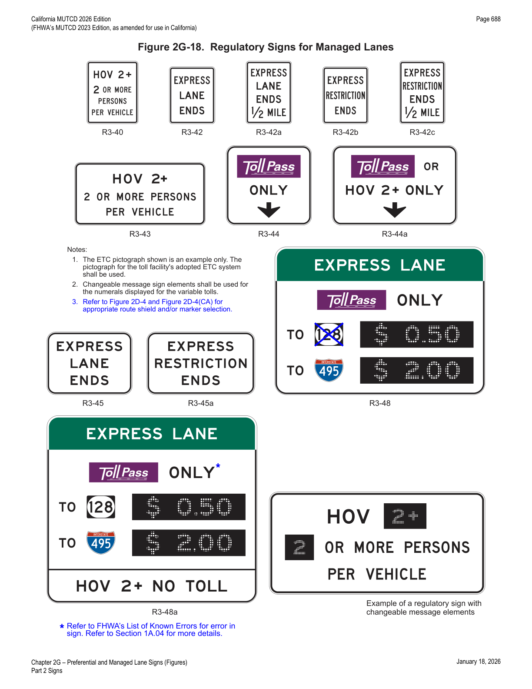
2G.19Guide Signs for Priced Managed Lanes
- 01Except as otherwise provided, guide signs for barrier-separated, buffer-separated, and contiguous managed lanes shall follow the specific provisions for Preferential Lane guide signs in Sections 2G.10 through 2G.15. Guide signs for highways on which all lanes are managed shall follow the general provisions for freeway and expressway guide signs in Chapter 2E as a whole. Guide signs for highways on which all lanes are managed and tolling/pricing is used as a management strategy shall follow the applicable provisions for toll road guide signs in Chapter 2F, in addition to the general provisions of Chapter 2E.
- 02If fixed or variable tolls are used as an operational strategy for a managed lane, the guide signs shall comply with Sections 2F.02, 2F.03, and 2F.17 regarding use, size, and placement of ETC-account pictographs.
- 03Guide signs at the initial and intermediate entry points to a priced managed lane in which all general-purpose passenger vehicles are allowed shall include the legend EXPRESS LANE(S). Except as provided in Paragraph 5, the guide signs shall incorporate the pictograph of the ETC account system into a header panel within the guide sign per Sections 2F.02, 2F.03, and 2F.17. For a priced managed lane that allows non-toll travel by HOV traffic without local-program registration, the header panel shall be modified to a regulatory format displaying both the ETC pictograph and the minimum occupancy requirement for non-toll travel with a black legend on a white background (see Figure 2G-19).
- 04Guide signs at the initial and intermediate entry points to a managed lane that allows only HOV traffic with a fixed or variable occupancy requirement shall follow Sections 2G.10 through 2G.12 and 2G.14.
- 05If registration in a toll-account program is not required for travel in a tolled managed lane, then ETC-account pictographs shall not be displayed on primary guide signs directing traffic to the managed lane. In such cases, the purple header panel shall be replaced with a warning header panel with black legend/border on a yellow background displaying the word TOLL, as illustrated in Figure 2G-20.
- 06If the managed lane does not accept ETC-account payments and collects tolls only by post-travel billing of registered vehicle owners, the legend TOLL BILLED BY MAIL ONLY may be displayed on a separate information sign within the sequence of primary guide signs in advance of the entrance.
- 07If the managed lane accepts payments from registered ETC accounts but does not require registration to use the lane, the pictographs of accepted ETC account programs may be displayed on a separate information sign within the primary guide sign sequence, which may also display the legend TOLL BILLED BY MAIL OR in addition to the pictograph.
- 08Figure 2G-19 shows examples of guide signs for entrances to priced managed lanes and other ETC account-only toll facilities that incorporate header panels with ETC account pictographs and regulatory legends.
- 09Figures 2G-21 through 2G-24 show examples of guide signs for various configurations of initial and intermediate entrances to a priced managed lane.
- 10Exit Destination supplemental guide signs, identifying final destination and downstream exit locations accessible from the managed lane (Figure 2G-25), should be installed in advance of the initial entry points to priced managed lanes, located per Paragraph 6 of Section 2G.11.
- 11For managed lanes available as an alternative to travel on adjacent general-purpose lanes on the same designated route, changeable message signs indicating comparative travel times or congestion levels between the managed lanes and general-purpose lanes (Figure 2G-26) should be installed in advance of the initial and intermediate entry points to the managed lanes.
- 12Changeable message signs may also be used on non-managed highways to display comparative travel times or congestion levels for a nearby managed highway.
- 13The use and locations of guide signs for intermediate egress locations and direct exits from a priced managed lane (Figures 2G-24 and 2G-27 through 2G-29) shall comply with Sections 2G.13 and 2G.15. The signs shall be suitably modified to display header messages of white legend on a green background relating the guide sign legends to the managed lane(s): (A) Post-mounted or overhead-mounted Advance Guide signs for intermediate egress to the general-purpose lanes shall include the legend LOCAL EXITS in a header panel, destination information or exit number(s) for the next exit(s), and the appropriate distance to the egress location (Figure 2G-27); (B) Post-mounted or overhead-mounted Intermediate Egress Direction signs shall include the legend LOCAL EXITS in a header panel, destination/exit number(s), and a diagonally upward-pointing directional arrow (Figure 2G-27); (C) For direct exits to another roadway, the legend EXPRESS EXIT shall be used on the Advance Guide and Exit Direction signs (Figure 2G-28); (D) For Pull-Through signs, the legend EXPRESS LANE(S) shall be used, either as a header panel or as the principal legend without a header panel (Figures 2G-27 through 2G-29).
- 14Section 2G.13 contains information on the use of overhead-mounted guide signs for intermediate egress to the general-purpose lanes.
- 15Figures 2G-30 and 2G-31 show examples of guide signing for direct entrances to a priced managed lane from a crossroad or surface street.
- 16The G92-1(CA) sign shall be used for direct entrances to a priced managed lane from a crossroad or surface street. When used for this purpose, the sign shall be modified in accordance with the provisions of this Section.
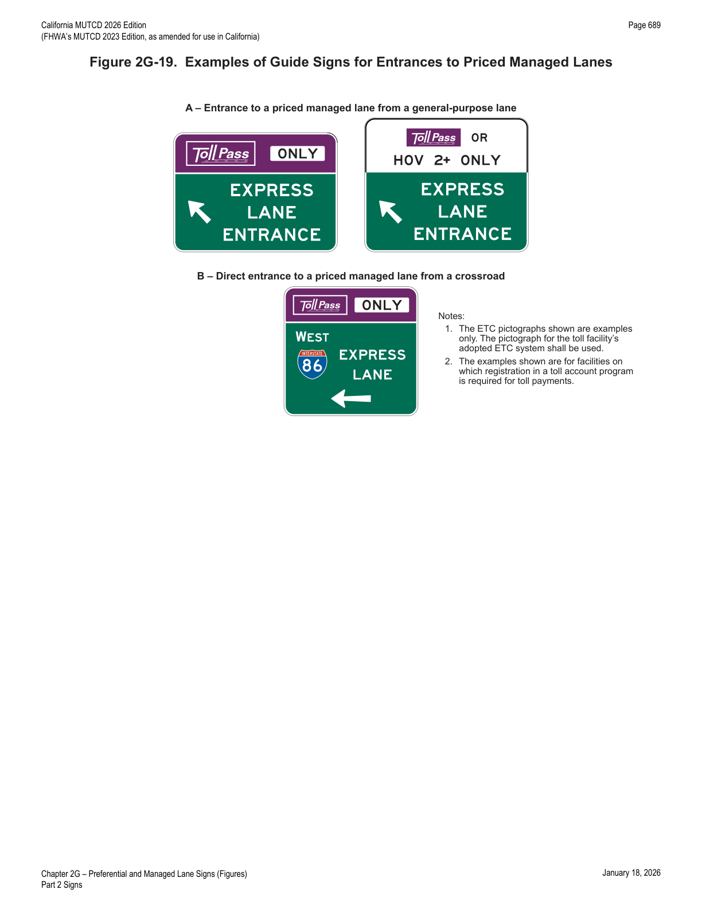
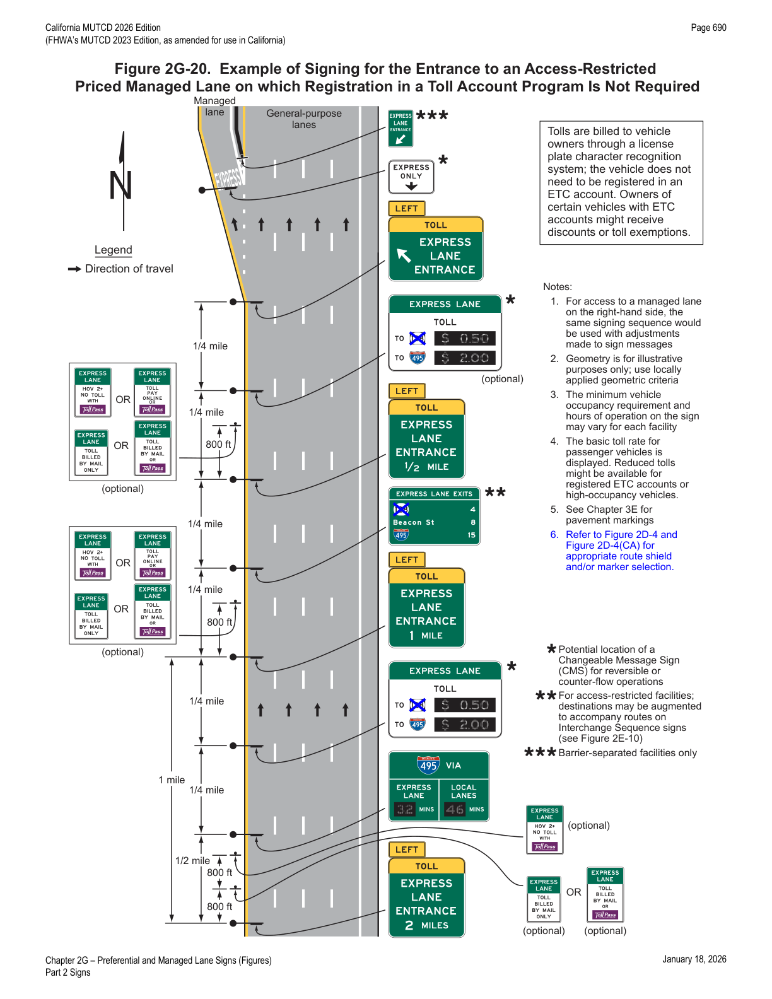
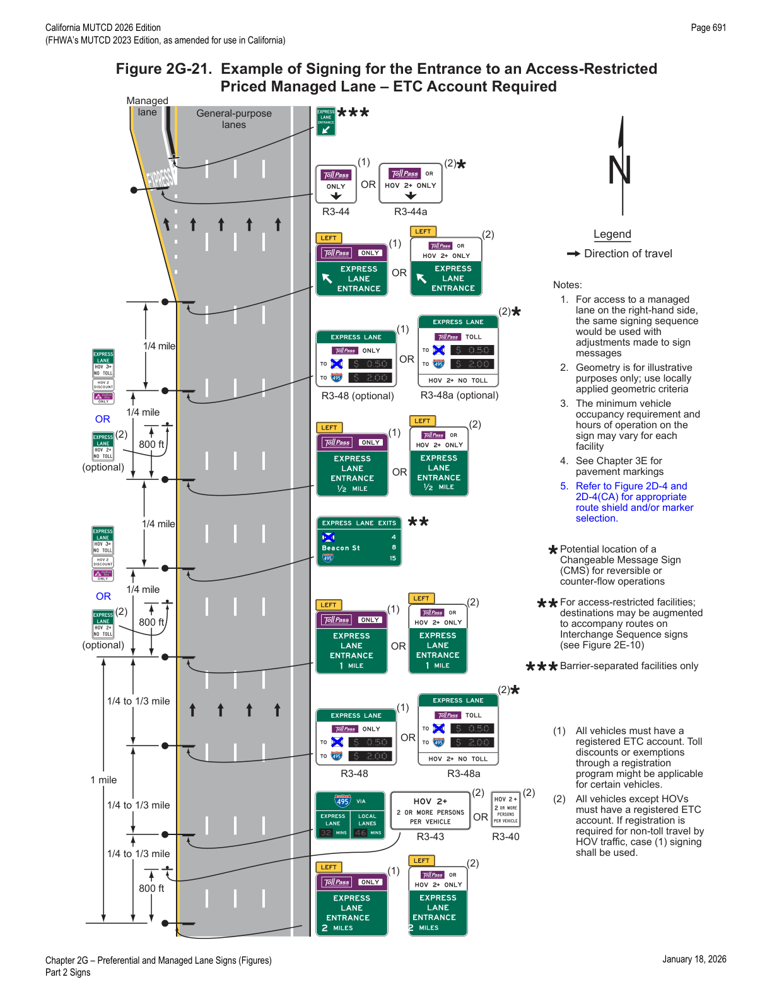
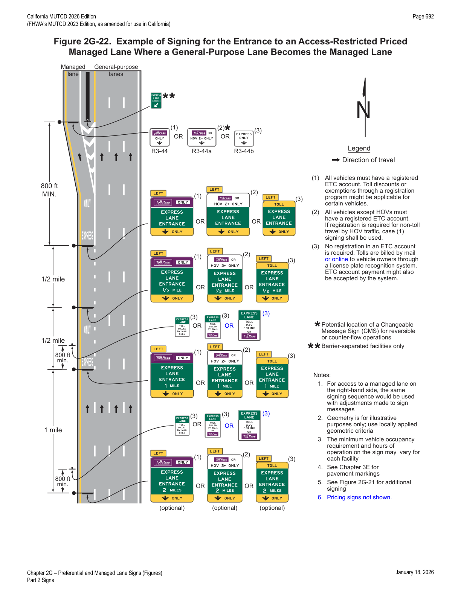
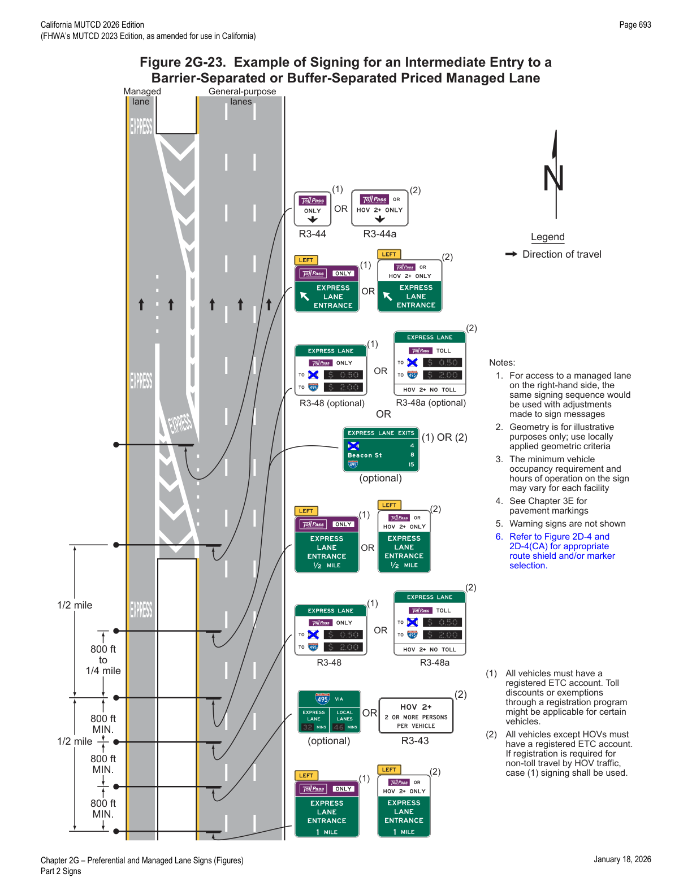
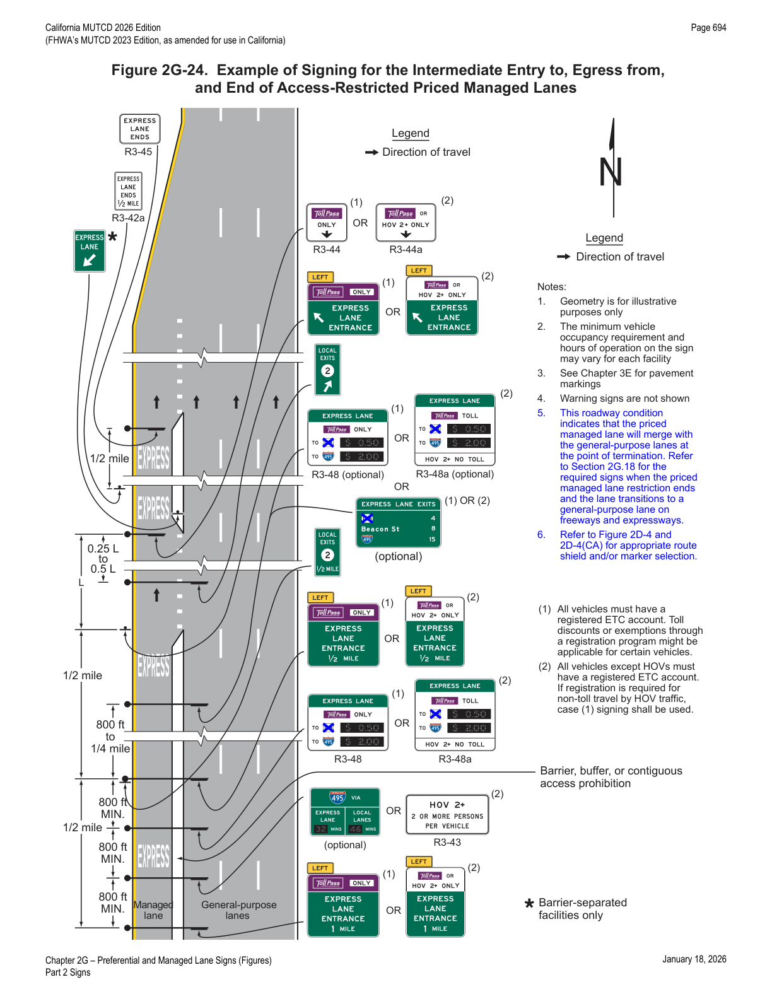
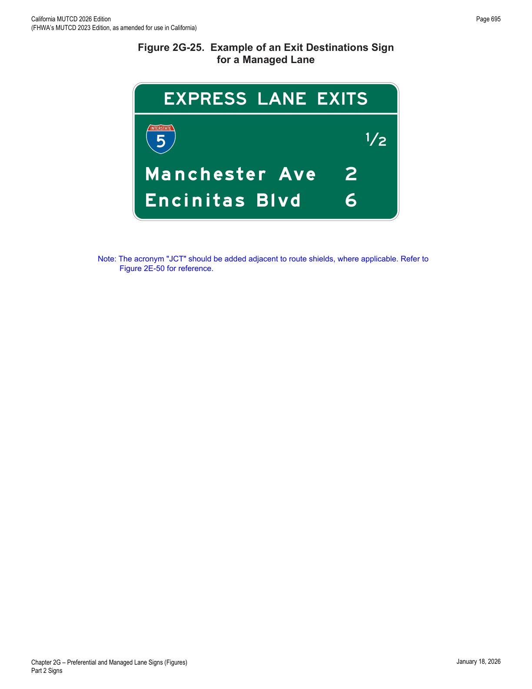
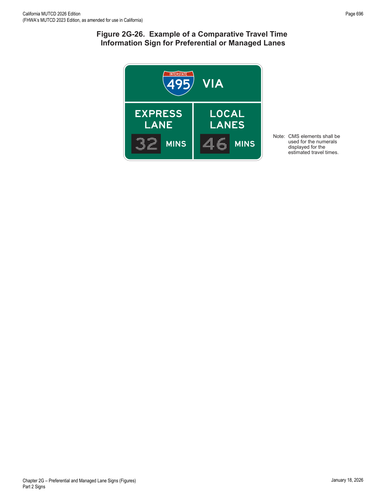
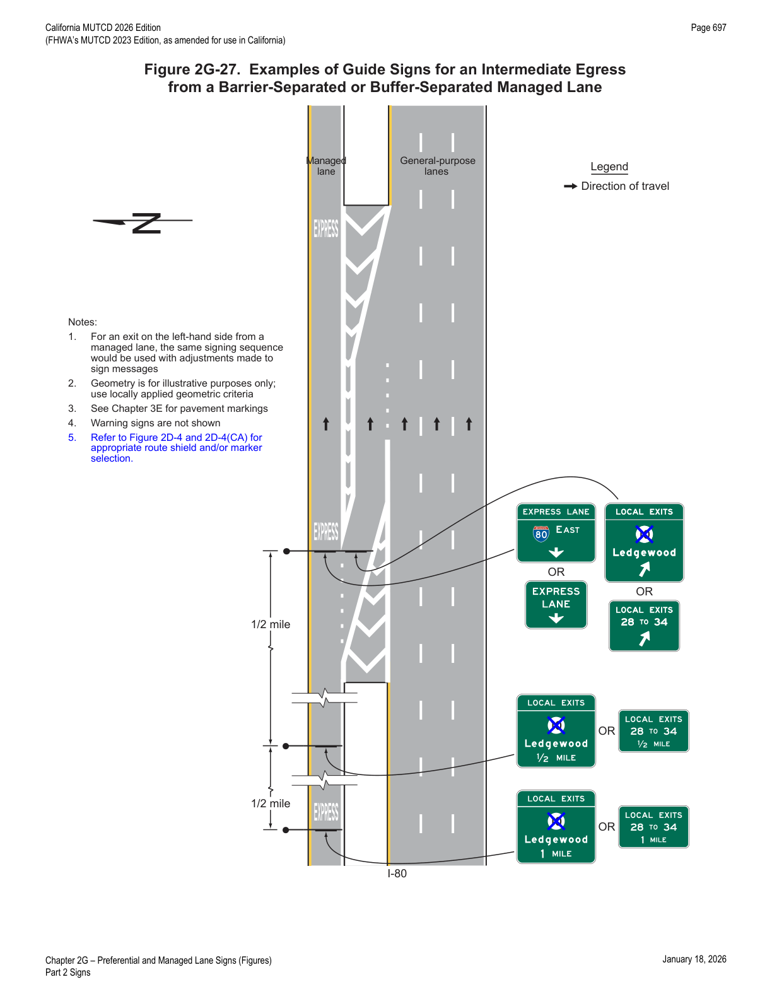
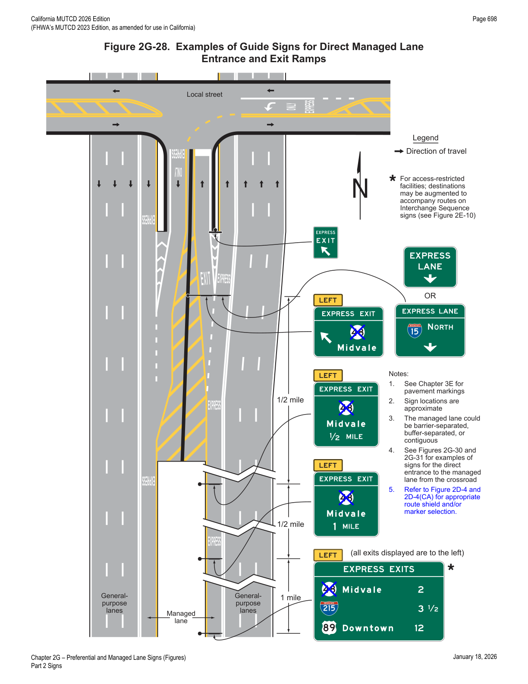
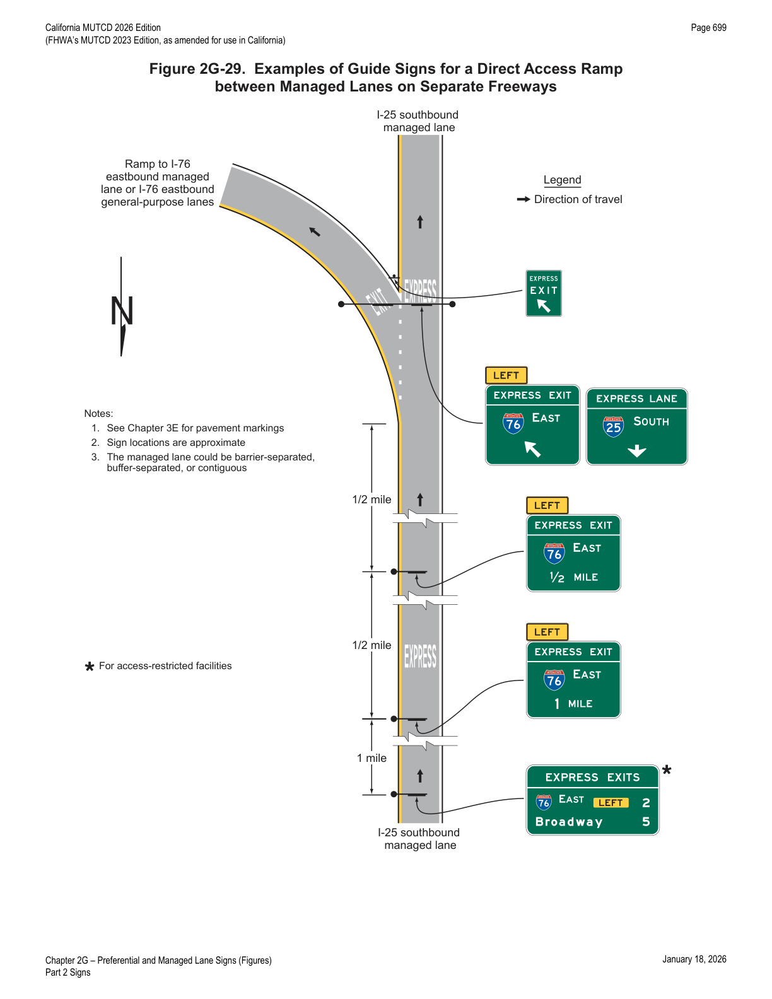
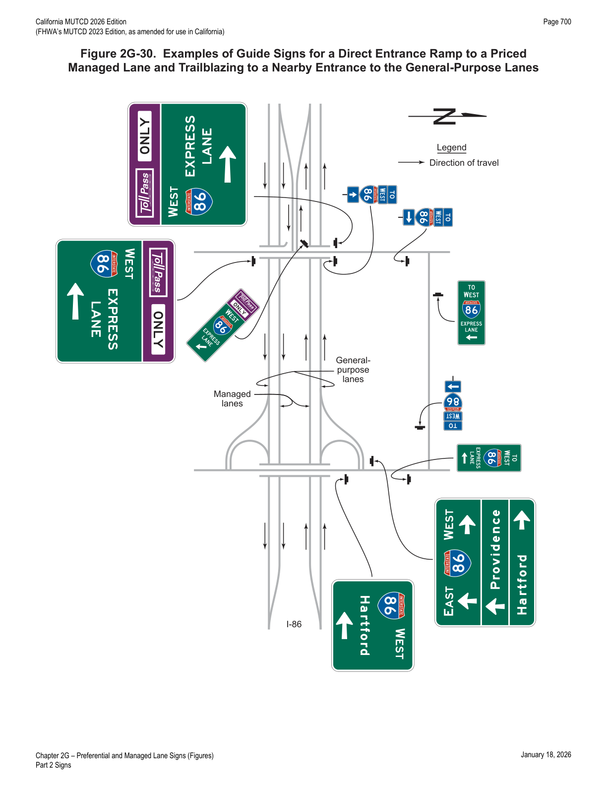
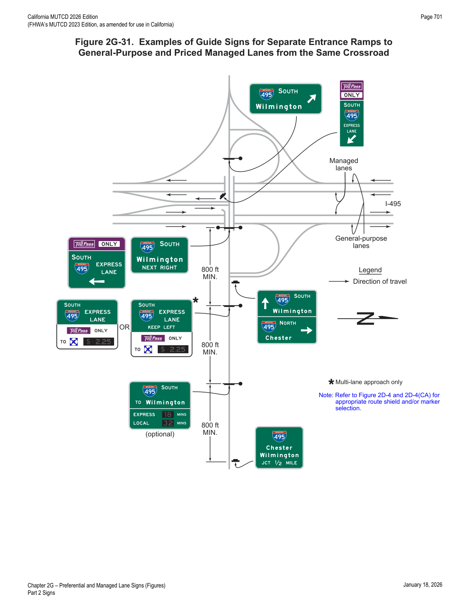
In practice: EXPRESS / EXPRESS LANE(S) is a reserved, uniform brand for priced managed lanes adjacent to general-purpose lanes on the same route — it is deliberately withheld from all-lanes-managed highways, alternative toll/non-toll ramp connections, and open-road tolling bypass lanes so drivers don't confuse those very different facility types.
2G.20Signs for Part-Time Travel on a Shoulder — General
- 01In some cases, paved shoulders are allowed for driving during peak periods to manage congestion, on freeways, expressways, and conventional roads alike. Travel might be restricted to certain vehicle classes (buses, HOV) or open to general traffic. When limited to certain classes, signing is similar to preferential lanes. Additional signing typically advises road users that the shoulder is not available for emergency use during these periods. Part-time shoulder travel might also employ lane-use control signals and/or blank-out signs. Depending on exit ramp terminal and auxiliary lane design, guide signs must account for exit maneuvers during both shoulder-use conditions and might need changeable legend elements; however, additional guide signs are not normally necessary specifically for the shoulder-travel condition. Pavement markings might also be modified where allowed shoulder travel begins and ends.
- 02Figure 2G-32 shows an example of signing for part-time travel on a shoulder.
- 03A shoulder opened to travel on a permanent, full-time basis shall be considered a travel lane and shall be signed and marked in accordance with other provisions of this Manual.
- 04Section 3E.04 contains provisions regarding the placement of markings on paved shoulders open for part-time travel.
2G.21Regulatory Signs and Plaques for Part-Time Travel on a Shoulder
- 01Regulatory signs shall be used to notify road users of the periods of operation that travel is allowed on a paved shoulder. The Part-Time Travel on Shoulder Operation (R3-51) sign shall be used where traffic is allowed to travel on the shoulder during certain fixed periods. The Part-Time Travel on Shoulder Variable Operation (R3-51d) sign with two flashing beacons (see Chapter 4S) mounted above it shall be used when the period of operation is variable.
- 01aThe AUTHORIZED BUSES ONLY SPECIFIC HOURS/DAYS (R130(CA)) sign shall be used where travel on the shoulder is restricted to certain classes of vehicles. The R130(CA) sign shall be placed at intervals not exceeding ½ mile along the length of shoulder where travel is permitted. The EMERGENCY STOPPING ALLOWED (R130P(CA)) plaque shall be installed below the R130(CA) sign.
- 02If certain classes of vehicles are not allowed to use the shoulder during these periods, a Selective Exclusion (R3-51aP or R3-51bP) plaque shall be mounted below the R3-51 or R3-51d sign. If travel is restricted to certain vehicle classes, the regulatory signs shall display that information.
- 03The EMERGENCY STOPPING ONLY OTHER TIMES (R3-51cP) plaque may be mounted below the R3-51 or R3-51d sign if the R3-51aP or R3-51bP plaque is not used.
- 04The Part-Time Travel on Shoulder Begins Advance (R3-52c) sign should be used in advance of the location where part-time travel on the shoulder first begins, followed by the DO NOT DRIVE ON SHOULDER (R4-17) sign appropriately spaced downstream.
- 04aRefer to FHWA's List of Known Errors for an error in Paragraph 4 text. Refer to Section 1A.04 for more details.
- 04bThe BUSES TRAVEL ON SHOULDER BEGINS ½ MILE (R131(CA)) sign should be installed in advance of the location where part-time bus travel on the shoulder begins.
- 05Approximately ½ mile from where part-time travel on the shoulder ends, the Part-Time Travel on Shoulder Ends Advance (R3-52a) sign shall be used. At the transition location back to permanent highway lane travel, an END TRAVEL ON SHOULDER (R3-52) sign shall be used. After this transition location, a DO NOT DRIVE ON SHOULDER (R4-17) sign shall be used.
- 05aRefer to FHWA's List of Known Errors for errors in Paragraph 5 text. Refer to Section 1A.04 for more details.
- 05aApproximately ½ mile before the end of part-time bus travel on the shoulder lane, the BUSES ON SHOULDER ENDS ½ MILE (R132(CA)) sign shall be installed. At the location where buses transition from shoulder travel back to the general-purpose lane, the END BUSES ON SHOULDER (R133(CA)) sign shall be installed.
- 06Where a shoulder allowing part-time travel is interrupted by a deceleration lane for an exit, the BEGIN EXIT LANE (R3-56) sign should be used at the beginning of the deceleration lane where traffic is allowed to enter during periods when travel is prohibited on the shoulder.
- 07On a conventional road where a shoulder open to part-time travel becomes a mandatory turn lane, the BEGIN RIGHT TURN LANE (R3-20R) sign should be post-mounted on the right-hand side at the upstream end of the turn lane taper of a mandatory right-turn lane. Where the shoulder is on the left, the BEGIN LEFT TURN LANE (R3-20L) sign may be post-mounted on a median (or left side for a one-way street) at the upstream end of a mandatory left-turn lane taper.
- 08Where turn-outs are provided for emergency stopping during periods when travel is allowed on the shoulder, the EMERGENCY STOPPING ONLY (R8-7) sign (see Section 2B.52) should be used adjacent to the turn-out (see Drawing D in Figure 2G-32).
- 09Where traffic on an entrance ramp is required to yield to traffic using the shoulder of the freeway/expressway mainline during periods of allowed travel, the TO TRAFFIC ON SHOULDER (R3-57P) plaque should be mounted below the YIELD (R1-2) sign (see Section 2B.05 and Drawing C in Figure 2G-32).
2G.22Warning Signs for Part-Time Travel on a Shoulder
- 01The Traffic Using Shoulder (W3-9) or BUSES USING SHOULDER (W130(CA)) sign should be used on a ramp that enters a freeway/expressway on which part-time shoulder travel is allowed. When used, it should be located on the right-hand side of the ramp from which the shoulder traffic approaches (see Drawing C in Figure 2G-32).
- 02A second W3-9 or W130(CA) sign may be used on the left-hand side of the ramp opposite the right-hand sign to provide greater visibility to oncoming traffic.
- 03The W3-9 or W130(CA) sign may be used on a conventional road that is required to stop for or yield to the through street/highway on which part-time shoulder travel is allowed.
2G.23Guide Signs for Part-Time Travel on a Shoulder
- 01Guide signs for part-time travel on a freeway/expressway shoulder generally consist of the typical interchange guide sign sequence (see Chapter 2E). While specialized guide signs are not normally necessary, modifications to the typical guide signs might be needed, especially where an interchange lane drop is created only during periods when the shoulder is open to travel.
- 02Where an interchange lane drop is created only during periods when a shoulder is open to travel, the Advance and Exit Direction guide signs (see Sections 2E.23 and 2E.25) shall be overhead-mounted and modified to include a blank-out or changeable EXIT ONLY message complying with Section 2E.28, displayed only during the periods the shoulder is open to travel (see Drawing E in Figure 2G-32).
- 03Guide signs located in conjunction with part-time travel on a shoulder shall otherwise comply with the provisions of Chapters 2D and 2E.
- 04Where turn-outs are provided for emergency stopping during periods when travel is allowed on the shoulder, the Advance Emergency Turn-Out (D17-5) sign and Emergency Turn-Out Directional (D17-6) sign (see Drawing D in Figure 2G-32) should be used as provided in Section 2D.54.
- 05Refer to FHWA's List of Known Errors for an error in Paragraph 4 text. Refer to Section 1A.04 for more details.
2G.24Lane-Use Control Signals for Part-Time Travel on a Shoulder
- 01Lane-use control signals (see Chapter 4T) are sometimes used for part-time travel on a paved shoulder (see Drawing A in Figure 2G-32), in addition to signs, to indicate allowable use of the shoulder.
- 02Overhead lane-use control signals may be used above a shoulder on which part-time travel is allowed.
- 03Except as otherwise provided, lane-use control signals used for part-time shoulder travel shall comply with Chapter 4T. They shall not be required above the lanes adjacent to the shoulder. A steady RED X signal indication shall be displayed when the shoulder is available for emergency stopping only and travel is otherwise prohibited.
- 04When part-time shoulder travel is allowed for variable periods, lane-use control signals shall be used, evenly spaced approximately every ½ mile or less and centered over the shoulder, to indicate when it is open or closed to vehicle travel. The signals shall display a steady DOWNWARD GREEN ARROW during allowed travel, followed by a steady YELLOW X just before closure, and a steady RED X when travel is discontinued. Additionally, during allowed travel a signal continuously displaying a steady YELLOW X shall be used approximately ½ mile in advance of where part-time travel ends, then display a steady RED X when travel ends. A signal with a steady RED X shall be displayed at all times at the location where part-time shoulder travel ends.
- 05For part-time shoulder travel with variable periods, post-mounted TRAVEL ON SHOULDER ALLOWED WHEN FLASHING (R3-51d) signs (see Drawing A in Figure 2G-32) with flashing beacons may be used in lieu of lane-use control signals at the same intervals.
- 05aRefer to FHWA's List of Known Errors for an error in Paragraph 5 text. Refer to Section 1A.04 for more details.
- 06The TRAVEL ON SHOULDER ON GREEN ARROW ONLY (R3-51e) sign (see Drawing A in Figure 2G-32) may be used with a lane-use control signal, mounted adjacent to the signal head, elsewhere on the signal support, or post-mounted next to or in advance of the signal.
- 07Refer to FHWA's List of Known Errors for an error in Paragraph 6 text. Refer to Section 1A.04 for more details.
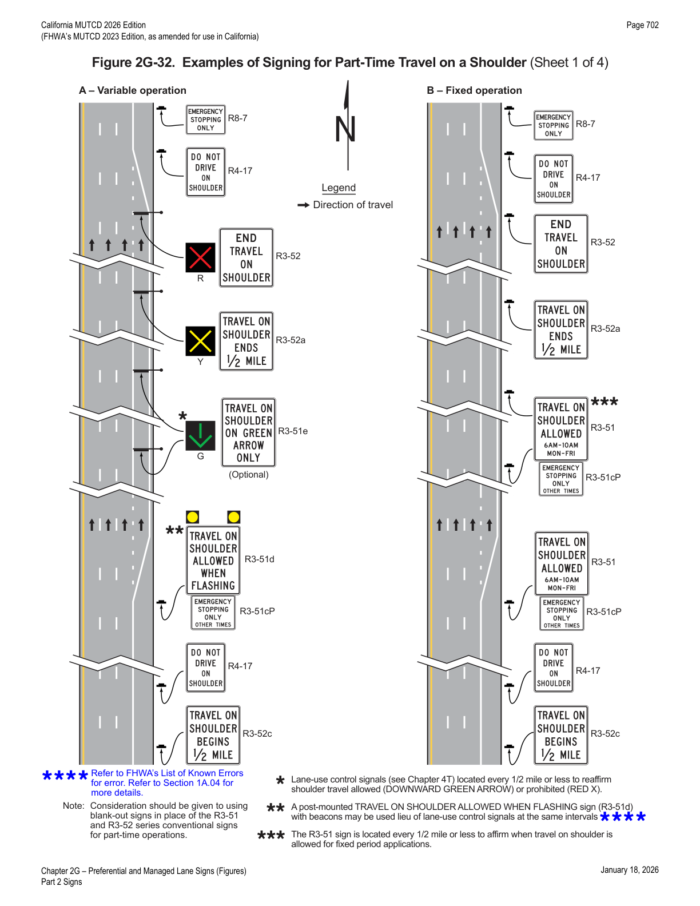
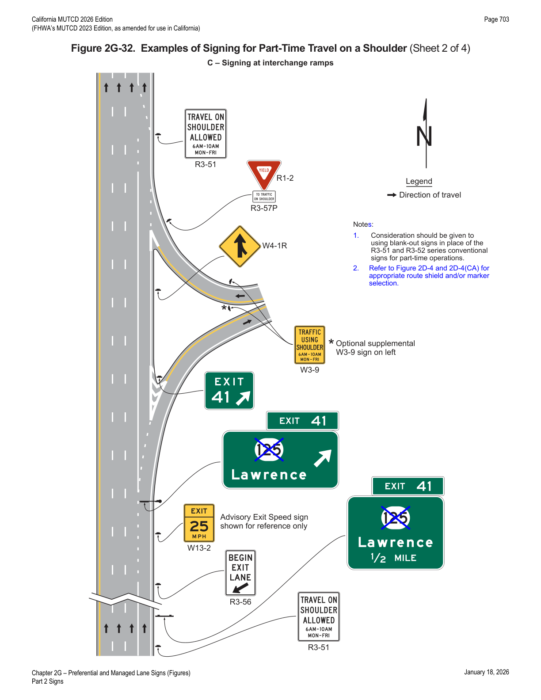
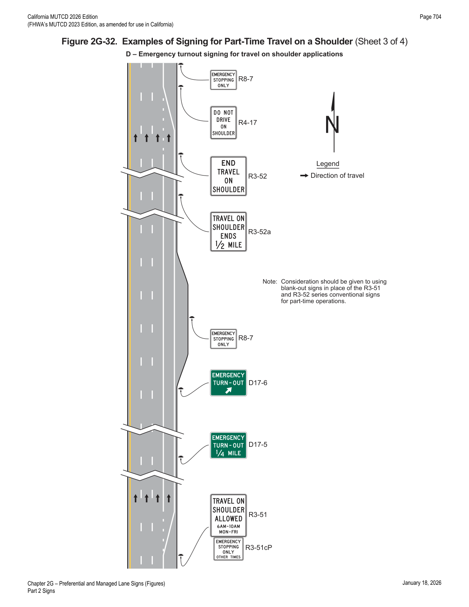
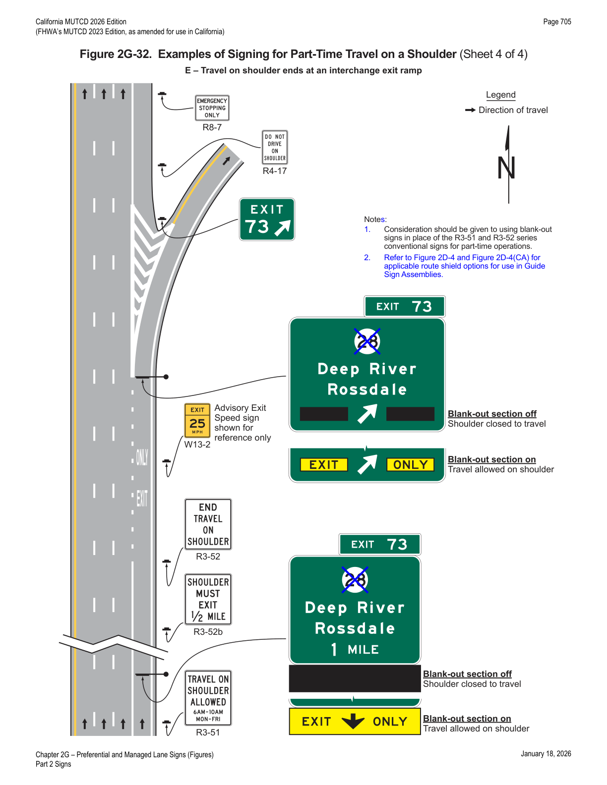
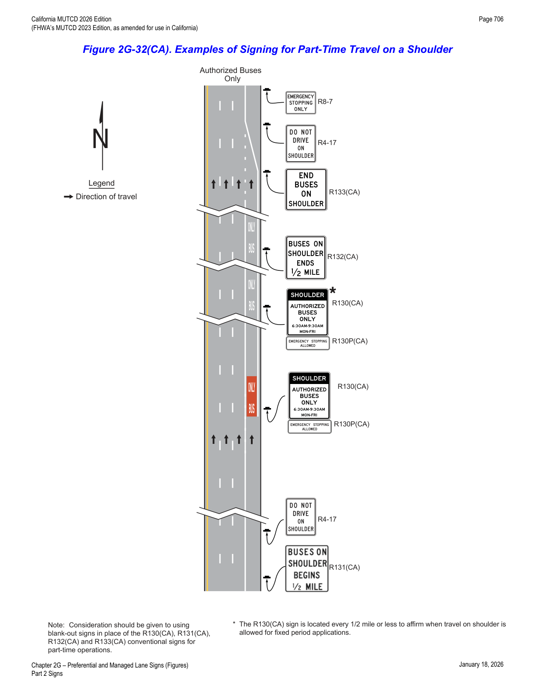
2G.25Lane-Use Control Signals for Active Lane Management on Freeways and Expressways
- 01Active lane management is a component of active traffic management in which the use of travel lanes and speed limits might be varied in real time in response to traffic conditions to manage congestion. It might employ lane-use control signals (see Chapter 4T) and/or changeable message signs (see Chapter 2L). Figure 2G-33 shows an example of lane-use control signals and variable Speed Limit signs for active lane management during an incident.
- 02Except as otherwise provided, lane-use control signals used for active lane management shall comply with Chapter 4T. When used for active lane management on a freeway/expressway, a steady YELLOW X signal indication shall be displayed to warn road users to vacate the lane when the next downstream lane-use control signal over the same lane is displaying a steady RED X.
- 03A steady YELLOW X signal indication may be displayed on one or more lane-use control signals in advance of the steady YELLOW X required by Paragraph 2, as conditions warrant, to warn road users to vacate the lane.
- 04Using too many steady YELLOW X signal indications could diminish the effectiveness of conveying that the lane is closed a short distance ahead and the road user needs to vacate the lane soon.
- 05When operated in conjunction with a temporary planned lane closure, lane-use control signals shall only supplement the temporary traffic control devices as provided in Part 6 of this Manual.
- 06Spacing of lane-use control signals for active lane management on freeways and expressways should be at ½-mile intervals. Closer spacing should be used where viewing distance is limited by roadway geometry, overcrossings, or other sight obstructions, or where traffic entering from intervening interchange ramps is not adequately served by the ½-mile spacing.
- 07Combining lane-use control signals with overhead sign support structures should be minimized to avoid overloading road users with too much information or conflicting/incorrect messages, such as exclusive lane use or a lane drop implied by a steady DOWNWARD GREEN ARROW indication below a guide sign.
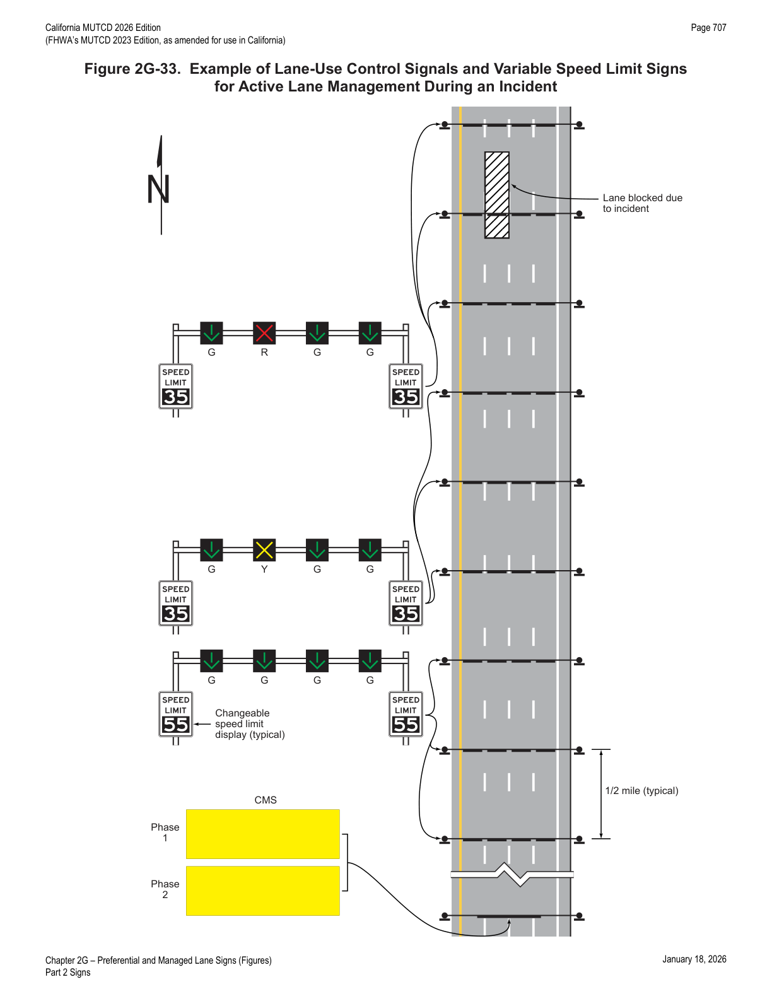
2G.26Variable Speed Limits for Active Traffic Management on Freeways and Expressways
- 01Active traffic management on freeways and expressways might employ variable speed limits as an element of an overall congestion management plan using a variable Speed Limit (R2-1) sign (see Section 2B.21).
- 02Careful consideration is needed in locating variable Speed Limit signs along the roadway and potential positioning adjacent to guide signs or lane-use control signals so that the speed displayed is clearly associated with the intended lane(s) and not other adjacent lanes, ramps, or roadways. This might require placing variable Speed Limit signs on separate supports away from guide/other signs or lane-use control signals.
- 03The regulatory speed displayed on a variable Speed Limit sign shall comply with Paragraph 13 of Section 2B.21 and the "Standard Highway Signs" publication (see Section 1A.05).
- 03aRefer to FHWA's List of Known Errors for an error in Paragraph 3 text. Refer to Section 1A.04 for more details.
- 04The location and positioning of variable Speed Limit signs should clearly associate the displayed speed with the intended lane(s) such that it would not conflict or confuse with other posted speed limits or advisory speeds for adjacent lanes, ramps, or roadways. Variable Speed Limit signs should not be located on overhead guide sign installations (see Section 2E.43).
- 05In addition to the post-interchange Speed Limit sign (see Paragraph 17 of Section 2E.47), the spacing of variable Speed Limit signs on freeways/expressways should be based on an engineering study considering factors such as recurring congestion, high-volume interchanges, weaving sections, and other location-specific factors known to affect travel speeds. Signs should be placed far enough in advance of known congestion points to adequately adjust operating speed and minimize vehicle queuing.
2G.101(CA)Preferential Lane Enforcement Signing (SR50(CA) Series)
- 01The HOV VIOLATION $__ MINIMUM FINE (SR50-2(CA)) sign should be placed near the beginning of all HOV facilities and may also be placed at intermediate entry points or gaps in the barrier or buffer for all barrier- or buffer-separated HOV lanes.
- 02The SR50-2(CA) sign should also be used on managed lane facilities that charge HOV users no toll or a discounted toll.
- 03The SR50-2(CA) sign may be repeated at 2-mile intervals or as needed at locations experiencing high violation rates.
- 04The HOV VIOLATION $__ MINIMUM FINE (SR50-1(CA)) sign may be used to supplement the SR50-2(CA) sign on HOV facilities or priced managed lane facilities where violation rates are particularly high.
- 05The SR50-1(CA) sign is normally placed onto an existing overhead sign structure if it can adequately support the additional sign.
- 06These signs shall be modified to delete the diamond symbol when utilized on priced managed lanes.
2G.102(CA)Regulatory Signs for Preferential Lanes at Metered On-Ramps
- 01For State highways, refer to Caltrans' Ramp Metering Design Manual (see Section 1A.05).
- 02Refer to CVC § 21655.5 for Exclusive- or Preferential-Use Lanes for High Occupancy Vehicles.
- 03Refer to Section 2B.61 for additional regulatory signs to be used at metered on-ramps.
- 04The No Left Turn Specific Hours EXCEPT BUSES AND HOV __+ (R33B(CA)) sign should be installed on local streets (with concurrence of the local agency) whenever left turns are restricted to buses and high-occupancy vehicles only during peak hours. The No Left Turn WHEN METERED EXCEPT BUSES AND HOV __+ (R33C(CA)) sign should be installed on local streets (with concurrence of local agency) whenever left turns are restricted to buses and HOVs only during periods of ramp metering.
- 05The LEFT (RIGHT OR CENTER) LANE DO NOT STOP (BUSES ONLY) (R88(CA)) sign shall be used for preferential lanes at metered on-ramps to indicate that the preferential lane is not required to stop.
- 06The diamond symbol shall not be used on the R88(CA) sign if the preferential lane is not designated for HOV usage.
- 07The R88(CA) sign should be placed on the same side as the preferential lane, upstream of the meter.
- 08The ALL VEHICLES STOP ON RED (R90-1(CA)) sign should be placed when converting a non-metered preferential lane to a metered operation.
- 09The R90-1(CA) sign may also be used on new installations where potential for confusion exists.
- 10The LEFT (RIGHT OR CENTER) HOV ___+ OR MORE ONLY WHEN METERED (R91-1(CA)) sign shall be used for preferential lanes at metered on-ramps to clearly indicate the lane and minimum number of persons per vehicle required to use the lane.
- 11The message "24 HOURS" shall be used instead of "WHEN METERED" if the preferential lane is in effect on a full-time basis.
- 12An alternate one-line message, such as "BUSES OK", may be used in place of "WHEN METERED" on line 6 of the R91-1(CA) sign.
- 13When used, the R91-1(CA) sign should be placed near a diamond symbol pavement marking.
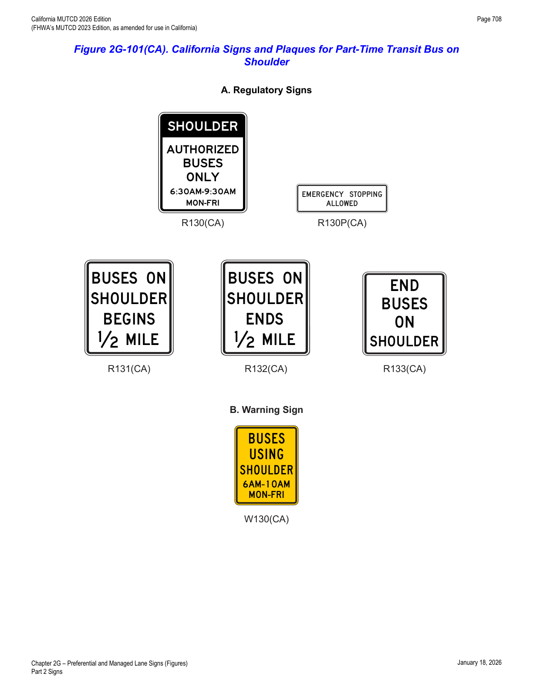
| Sign or Plaque | Designation | Section | Conv. Road — Single Lane | Conv. Road — Multi-Lane | Expwy/Fwy — Minimum | Expwy/Fwy — Oversized |
|---|---|---|---|---|---|---|
| Preferential Lane Vehicle Occupancy Definition (post-mounted) | R3-10, 10a | 2G.04 | 30 x 42 | 30 x 42 | 36 x 60 | 78 x 96* |
| Preferential Lane Operation — HOV (post-mounted) | R3-11 series | 2G.05 | 30 x 42 | 30 x 42 | 36 x 60 | 78 x 96* |
| Motorcycles Allowed (plaque) | R3-11hP | 2G.05 | 30 x 15 | 30 x 15 | 36 x 18 | 78 x 36* |
| Preferential Lane Ahead or Ends — HOV (post-mounted) | R3-12, 12a, 12b, 12c, 12d, 12e | 2G.06 / 2G.07 | 30 x 42 | 30 x 42 | 36 x 60 | 48 x 84* |
| Preferential Lane Ahead or Ends (post-mounted) | R3-12f, 12g | 2G.06 / 2G.07 | 30 x 36 | 30 x 36 | 36 x 48 | 48 x 60* |
| Preferential Lane Ends (post-mounted) | R3-12h | 2G.07 | 36 x 48 | 36 x 48 | 48 x 66* | 60 x 84* |
| Preferential Lane Vehicle Occupancy Definition (overhead) | R3-13, 13a | 2G.04 | 66 x 36 | 66 x 36 | 84 x 48 | 144 x 78 |
| HOV Lane Operation (overhead) | R3-14, 14a | 2G.05 | 72 x 60 | 72 x 60 | 96 x 72 | 144 x 108 |
| HOV Lane Operation (overhead) | R3-14b | 2G.05 | 72 x 60 | 72 x 60 | 96 x 72 | 120 x 96 |
| Preferential Lane Operation (overhead) | R3-14c | 2G.05 | 90 x 60 | 90 x 60 | 108 x 72 | 156 x 102 |
| HOV Lane Ahead (overhead) | R3-15 | 2G.06 | 66 x 36 | 66 x 36 | 84 x 48 | 102 x 60 |
| HOV Lane Begins XX Miles (overhead) | R3-15a | 2G.06 | 78 x 48 | 114 x 72 | 144 x 84 | 150 x 108 |
| HOV Lane Ends (overhead) | R3-15b, 15c | 2G.07 | 66 x 36 | 66 x 36 | 84 x 48 | 102 x 60 |
| Preferential Lane Ahead or Ends (overhead) | R3-15d, 15e | 2G.06 / 2G.07 | 42 x 36 | 42 x 36 | 54 x 48 | 72 x 60 |
| Priced Managed Lane Vehicle Occupancy Definition (post-mounted) | R3-40 | 2G.18 | — | — | 54 x 66* | 54 x 66* |
| Priced Managed Lane Ends (post-mounted) | R3-42 | 2G.18 | — | — | 48 x 60* | 48 x 60* |
| Priced Managed Lane Ends Advance (post-mounted) | R3-42a | 2G.18 | — | — | 48 x 66* | 48 x 66* |
| Priced Managed Lane Restriction Ends (post-mounted) | R3-42b | 2G.18 | — | — | 48 x 60* | 48 x 60* |
| Priced Managed Lane Restriction Ends Advance (post-mounted) | R3-42c | 2G.18 | — | — | 48 x 66* | 48 x 66* |
| Priced Managed Lane Vehicle Occupancy Definition | R3-43 | 2G.18 | — | — | 138 x 66 | 138 x 66 |
| Priced Managed Lane Operation (overhead) | R3-44 | 2G.18 | — | — | 90 x 84 | 90 x 84 |
| Priced Managed Lane Operation (overhead) | R3-44a | 2G.18 | — | — | 132 x 84 | 132 x 84 |
| Priced Managed Lane Operation (overhead) | R3-44b | 2G.18 | — | — | 90 x 72 | 90 x 72 |
| Priced Managed Lane Ends (overhead) | R3-45 | 2G.18 | — | — | 90 x 66 | 90 x 66 |
| Priced Managed Lane Restriction Ends (overhead) | R3-45a | 2G.18 | — | — | 114 x 66 | 114 x 66 |
| Priced Managed Lane Toll Rate | R3-48 | 2G.18 | — | — | Varies | Varies |
| Priced Managed Lane Toll Rate | R3-48a | 2G.18 | — | — | Varies | Varies |
| Part-Time Travel on Shoulder Operation | R3-51 | 2G.21 | — | — | 66 x 78* | 66 x 78* |
| No Trucks (plaque) | R3-51aP | 2G.21 | — | — | 66 x 12* | 66 x 12* |
| No Trucks or Buses (plaque) | R3-51bP | 2G.21 | — | — | 66 x 24* | 66 x 24* |
| Emergency Stopping Only Other Times (plaque) | R3-51cP | 2G.21 | — | — | 54 x 42* | 54 x 42* |
| Sign or Plaque | Designation | Section | Conv. Road — Single Lane | Conv. Road — Multi-Lane | Expwy/Fwy — Minimum | Expwy/Fwy — Oversized |
|---|---|---|---|---|---|---|
| Part-Time Travel on Shoulder Variable Operation | R3-51d | 2G.21 | — | — | 66 x 84* | 66 x 84* |
| Part-Time Travel on Shoulder on Green Arrow | R3-51e | 2G.24 | — | — | 66 x 84* | 66 x 84* |
| Part-Time Travel on Shoulder Ends | R3-52 | 2G.21 | — | — | 66 x 72* | 66 x 72* |
| Part-Time Travel on Shoulder Ends Advance | R3-52a | 2G.21 | — | — | 66 x 72* | 66 x 72* |
| Shoulder Must Exit Advance | R3-52b | 2G.21 | — | — | 66 x 72* | 66 x 72* |
| Part-Time Travel on Shoulder Begins Advance | R3-52c | 2G.21 | — | — | 66 x 72* | 66 x 72* |
| Begin Exit Lane | R3-56 | 2G.21 | — | — | 48 x 72* | 48 x 72* |
| To Traffic on Shoulder (plaque) | R3-57P | 2G.21 | — | — | 36 x 18 | 36 x 18 |
| Traffic Using Shoulder | W3-9 | 2G.22 | — | — | 36 x 48 | 48 x 60 |
| High-Occupancy Vehicles (plaque) | W16-11P | 2G.09 | 24 x 12 | 24 x 12 | 30 x 18 | 30 x 18 |
| Preferential Lane Entrance Gore | E8-1 | 2G.10 | — | — | 48 x 96 | 48 x 96 |
| Preferential Lane Intermediate Entrance Gore | E8-1a | 2G.10 | — | — | 48 x 84 | 48 x 84 |
| Preferential Lane Entrance Direction (overhead) | E8-2 | 2G.10 | — | — | 228 x 72 | 228 x 72 |
| Preferential Lane Entrance Direction (post-mounted) | E8-2a | 2G.10 | — | — | 186 x 108 | 186 x 108 |
| Preferential Lane Entrance Advance | E8-3 | 2G.10 | — | — | 186 x 96 | 186 x 96 |
| Preferential Lane Direct Exit Gore | E8-4 | 2G.15 | — | — | 60 x 78* | 60 x 78* |
| Preferential Lane Intermediate Egress Direction | E8-5 | 2G.13 | — | — | Varies x 90 | Varies x 90 |
| Preferential Lane Intermediate Egress Advance | E8-6 | 2G.13 | — | — | Varies x 84 | Varies x 84 |
| Sign or Plaque | Designation | Section | Conv. Road — Single Lane | Conv. Road — Multi-Lane | Expwy/Fwy — Minimum | Expwy/Fwy — Oversized |
|---|---|---|---|---|---|---|
| HOV Advance Lane Assignment | G20-10(CA) | 2G.14 | VAR x 110 | VAR x 110 | VAR x 110 | — |
| HOV LANE ENTRANCE | G92-1(CA) | 2G.14, 2G.19 | 36 x 36 | 36 x 36 | 48 x 42 | — |
| No Left Turn Specific Hours EXCEPT BUSES AND HOV ___+ | R33B(CA) | 2G.03, 2G.102(CA) | 24 x 60 | 24 x 60 | — | — |
| No Left Turn WHEN METERED EXCEPT BUSES AND HOV ___+ | R33C(CA) | 2G.03, 2G.102(CA) | 24 x 60 | 24 x 60 | — | — |
| Specific Hours/Days (plaque) | R82aP(CA) | 2G.06 | 30 x 12 | 30 x 12 | 36 x 18 | 48 x 24 |
| Specific Hours/Days (plaque) | R82bP(CA) | 2G.06 | 30 x 24 | 30 x 24 | 36 x 24 | 48 x 36 |
| LEFT (CENTER OR RIGHT) LANE DO NOT STOP (BUSES ONLY) | R88(CA) | 2G.03, 2G.102(CA) | 30 x 30 | 30 x 30 | — | — |
| ALL VEHICLES STOP ON RED | R90-1(CA) | 2G.03, 2G.102(CA) | 24 x 30 | 24 x 30 | — | — |
| LEFT (CENTER OR RIGHT) HOV ___+ OR MORE ONLY WHEN METERED (24 HOURS) | R91-1(CA) | 2G.03, 2G.102(CA) | 30 x 54 | 30 x 54 | — | — |
| (HOV) NO TRUCKS 2 AXLES OR MORE – NO VEHICLES WITH TRAILERS | R91-4(CA) | 2G.03, 2G.04 | 36 x 66 | 36 x 66 | 36 x 66 | 48 x 78 |
| AUTOS/PICKUPS 2 SEATERS WITH 2 PERSONS OK (plaque) | R91bP(CA) | 2G.03, 2G.04 | 30 x 18 | 36 x 18 | 36 x 18 | 48 x 24 |
| Mandatory/Optional HOV Movement Lane Control | R94(CA) | 2G.03, 2G.05 | 60 x 42 | 60 x 42 | — | — |
| Part-Time Bus Travel on Shoulder Operation | R130(CA) | 2G.21 | 36 x 42 | 36 x 42 | 42 x 60* | 78 x 90* |
| EMERGENCY Stopping Allowed (plaque) | R130P(CA) | 2G.21 | 36 x 12 | 36 x 12 | 42 x 15* | 78 x 24* |
| Part-Time Bus Travel on Shoulder Begins Advance | R131(CA) | 2G.21 | 36 x 42 | 36 x 42 | 54 x 66* | 78 x 84* |
| Part-Time Bus Travel on Shoulder Ends Advance | R132(CA) | 2G.21 | 36 x 42 | 36 x 42 | 54 x 66* | 78 x 84* |
| Part-Time Bus Travel on Shoulder Ends | R133(CA) | 2G.21 | 36 x 42 | 36 x 42 | 54 x 66* | 78 x 84* |
| HOV VIOLATION $___ MINIMUM FINE | SR50-1(CA) | 2G.101(CA) | — | — | 192 x 70 | 192 x 70 |
| HOV VIOLATION $___ MINIMUM FINE | SR50-2(CA) | 2G.101(CA) | 30 x 66 | 30 x 66 | 36 x 78 | 48 x 96 |
| RIGHT LANE BUS LANE AHEAD | SR60-1(CA) | 2G.06 | 30 x 42 | 30 x 42 | 30 x 42 | — |
| RIGHT LANE BUS LANE AHEAD ON X ST. | SR60-2(CA) | 2G.06 | 30 x 42 | 30 x 42 | 30 x 42 | — |
| RIGHT LANE BUSES TAXIS ONLY 24 HOURS | SR60-4(CA) | 2G.05 | 30 x 42 | 30 x 42 | 30 x 42 | — |
| RIGHT LANE TRAINS RIGHT TURNS ONLY 24 HOURS | SR60-6(CA) | 2G.05 | 30 x 42 | 30 x 42 | 30 x 42 | — |
| RIGHT LANE BUSES TAXIS ONLY, Specific Hours/Days with Downward Arrow | SR60-8(CA) | 2G.05 | 54 x 80 | 54 x 80 | 54 x 80 | — |
| (HOV) Lane Reduction | W11-1(CA) | 2G.08 | 30 x 60 | 30 x 60 | 36 x 60 | 48 x 72 |
| (HOV) Merge | W59-1(CA) | 2G.08 | 30 x 60 | 30 x 60 | 36 x 60 | 48 x 72 |
| (HOV) Advisory Exit (Ramp) Speed | W72B(CA) | 2G.08 | 36 x 66 | 36 x 66 | 48 x 78 | 60 x 102 |
| (HOV) THRU TRAFFIC MERGE LEFT (RIGHT) | W74-1(CA) | 2G.08 | 30 x 60 | 30 x 60 | 36 x 60 | 48 x 72 |
| BUSES USING SHOULDER | W130(CA) | 2G.22 | — | — | 36 x 48 | 48 x 60 |
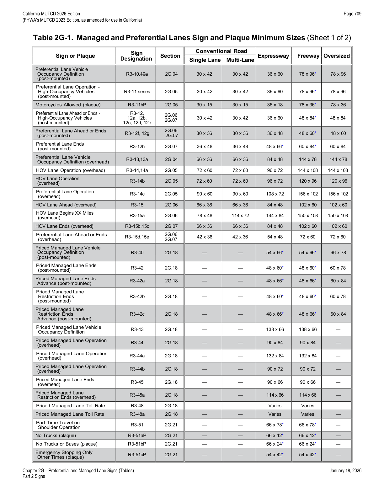
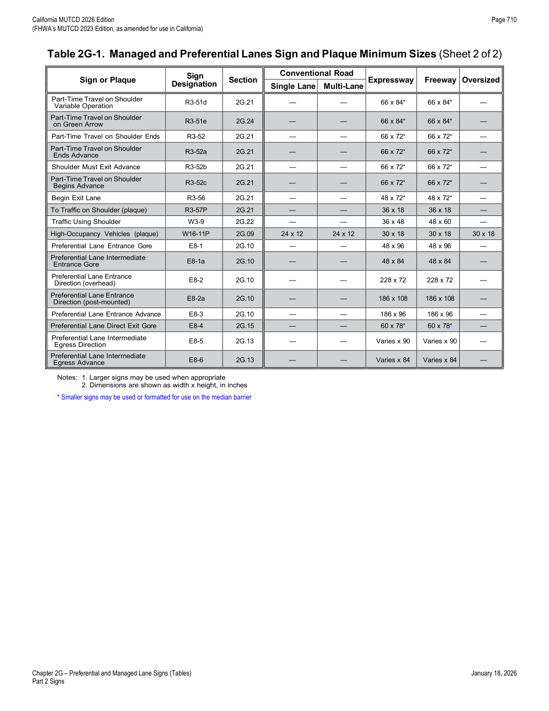
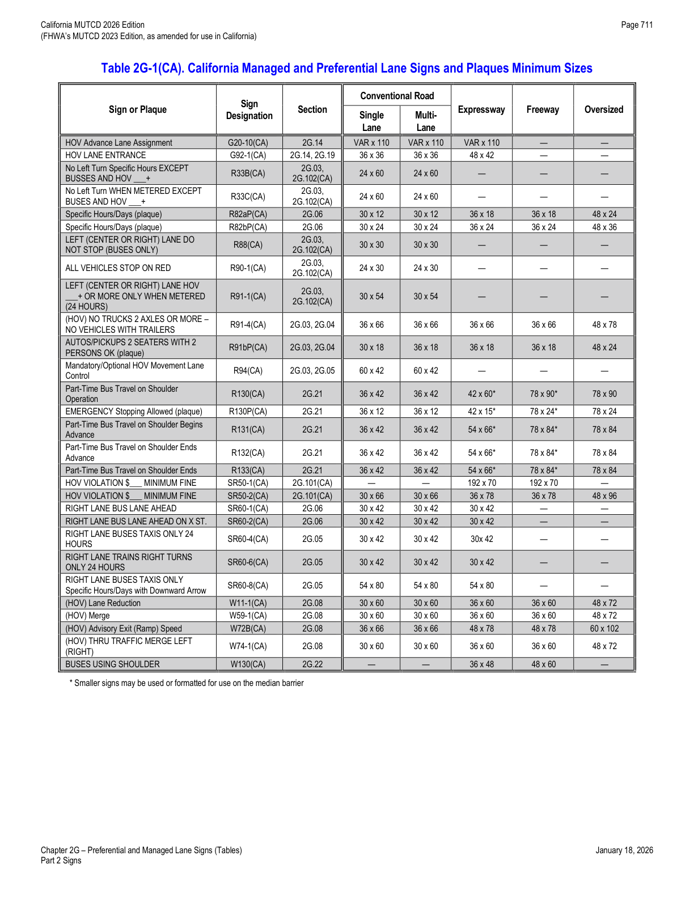
★ Key Takeaways — Chapter 2G
- The white diamond symbol is reserved exclusively for HOV lanes with a vehicle occupancy requirement — it must never appear on bus, taxi, or bicycle preferential lane signs, and guide signs (unlike regulatory signs) show the diamond but never the occupancy number or hours of operation.
- Three lane-separation geometries recur throughout: barrier-separated, buffer-separated, and contiguous — each drives different rules for whether guide signs are overhead-only, post-mounted-only, or a required overhead/post-mounted supplement pair.
- Entry-point signs for preferential lanes must never use the word "EXIT" — they use "ENTRANCE" instead, since drivers are not leaving the designated route; conversely, egress/exit signs for leaving the preferential lane use conventional exit terminology.
- EXPRESS / EXPRESS LANE(S) is the uniform, reserved legend for priced managed lanes adjacent to general-purpose lanes on the same route — it is withheld from all-lanes-managed highways, alternative toll ramps, and open-road-tolling bypass lanes.
- Priced managed lane signs swap the ETC purple header panel for a black-on-yellow TOLL warning header when ETC registration is not required to travel the lane, and drop the diamond symbol from Vehicle Occupancy Definition signs (R3-40/R3-43) when the occupancy requirement is only a toll-exemption threshold, not an HOV-lane admission requirement.
- Part-time shoulder travel combines regulatory signs (R3-51 series), warning signs (W3-9/W130(CA)), lane-use control signals (steady green arrow / yellow X / red X), and — only where a lane drop is created solely during shoulder-open periods — a blank-out or changeable EXIT ONLY guide sign panel.
- Active lane management and variable speed limits are freeway/expressway-only tools: lane-use control signals are spaced at ½-mile intervals (closer where sightlines are limited), and variable Speed Limit signs must never be mounted on overhead guide sign installations to avoid confusing which lane the posted speed governs.
- California adds an enforcement-signing layer (2G.101(CA), SR50 series) and metered-on-ramp preferential lane signing (2G.102(CA), R88(CA)/R90-1(CA)/R91-1(CA)/R94(CA)) not found in the base FHWA manual.